Manual de Instruções
Linha de Laminação Tornado 1,4
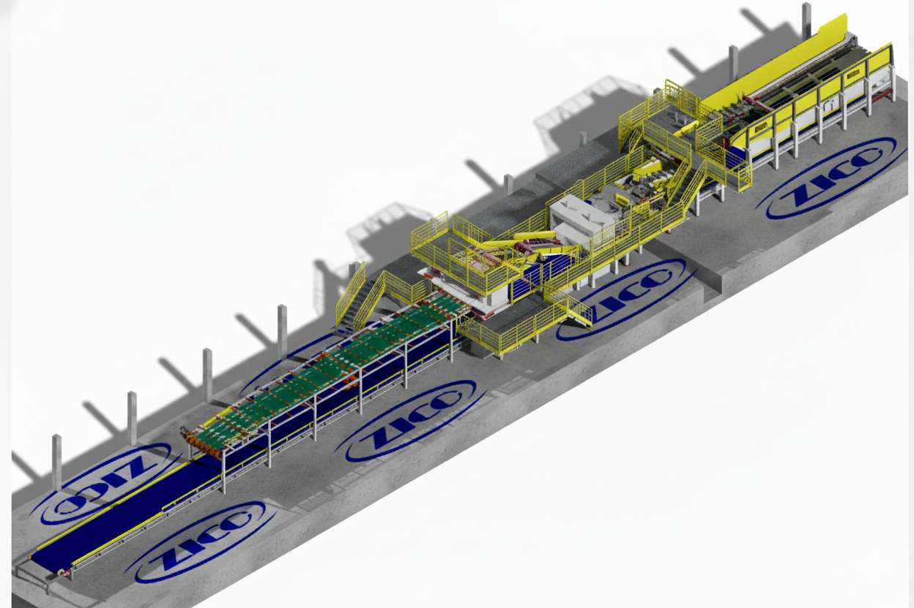
Três Barras (SC) - CEP 89490-000
conveyor_belt 1. Esteira de Entrada de Toras
Introdução e Visão Geral do Equipamento
O Sistema de Alimentação e Unitização de Toras é um equipamento essencial em processos de beneficiamento primário (como serrarias ou linhas de descascamento), projetado para receber toras em grandes volumes (dumping) e garantir a alimentação contínua e individualizada (unitizada) para a próxima máquina de processamento, a Serra Log Split Saw.
Sua principal função é atuar como um buffer e regulador de fluxo, convertendo o fluxo de entrada intermitente e massivo (proveniente de máquinas florestais) em um fluxo de saída constante e cadenciado, otimizando a eficiência da linha de produção.
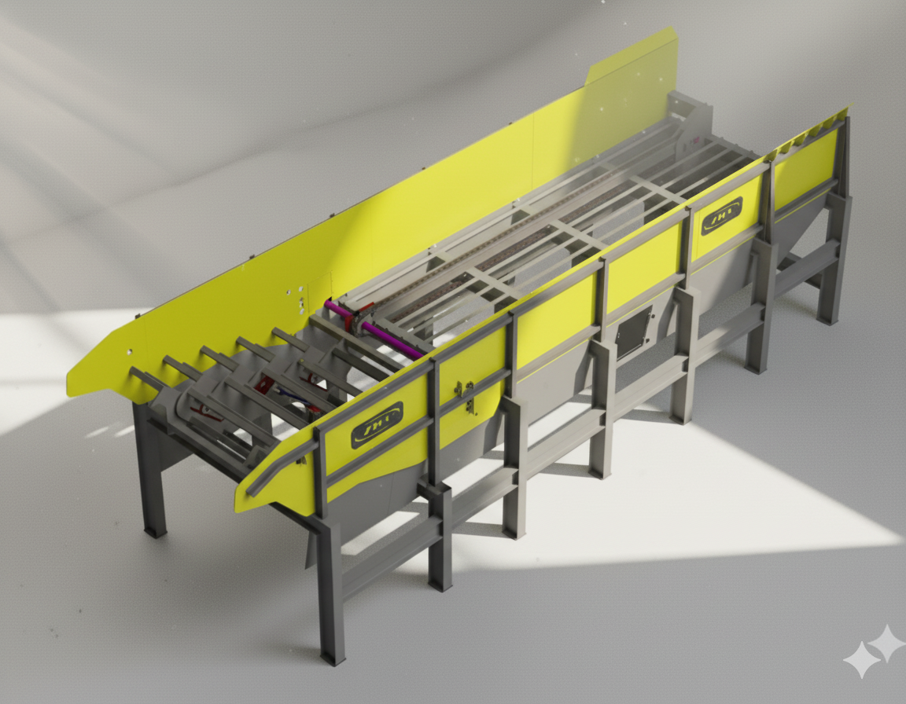
Componentes Principais
1. Esteira de Alimentação (Infeed Conveyor)
- Recebe as toras brutas, geralmente descarregadas por feller bunchers ou outros equipamentos florestais.
- Possui um sistema de tração robusto por correntes, projetado para movimentar cargas pesadas de forma confiável e em ambientes de alta abrasão.
- É acionada sob demanda, despejando toras na seção unitizadora apenas quando o nível de estoque está baixo.
2. Sistema Unitizador Step Feeder (Alimentador de Degraus)
- Localizado após a esteira de alimentação, este mecanismo utiliza degraus (ou "passes") para elevar e separar as toras.
- Sua função é "unitizar" o material, garantindo que apenas uma tora por vez seja disponibilizada para o equipamento subsequente.
Ciclo Operacional
- Controle de Estoque (Unitizador): Sensores monitoram a quantidade de toras acumuladas. Se o nível cair, o PLC aciona a Esteira de Alimentação.
- Unitização e Espera: O Unitizador eleva as toras. No último degrau, um sensor atua como ponto de espera.
- Interface com a Serra: A Serra Log Split Saw envia um sinal ("Solicitação de Tora") e o Unitizador libera a tora.
1.1 Manutenção e Ajustes (Esteira)
Mecanismo de Tensionamento (Esticador)
O tensionamento da corrente de arraste é realizado através de um Parafuso/Barra Roscada de ajuste manual, que atua sobre o eixo das engrenagens do esticador.
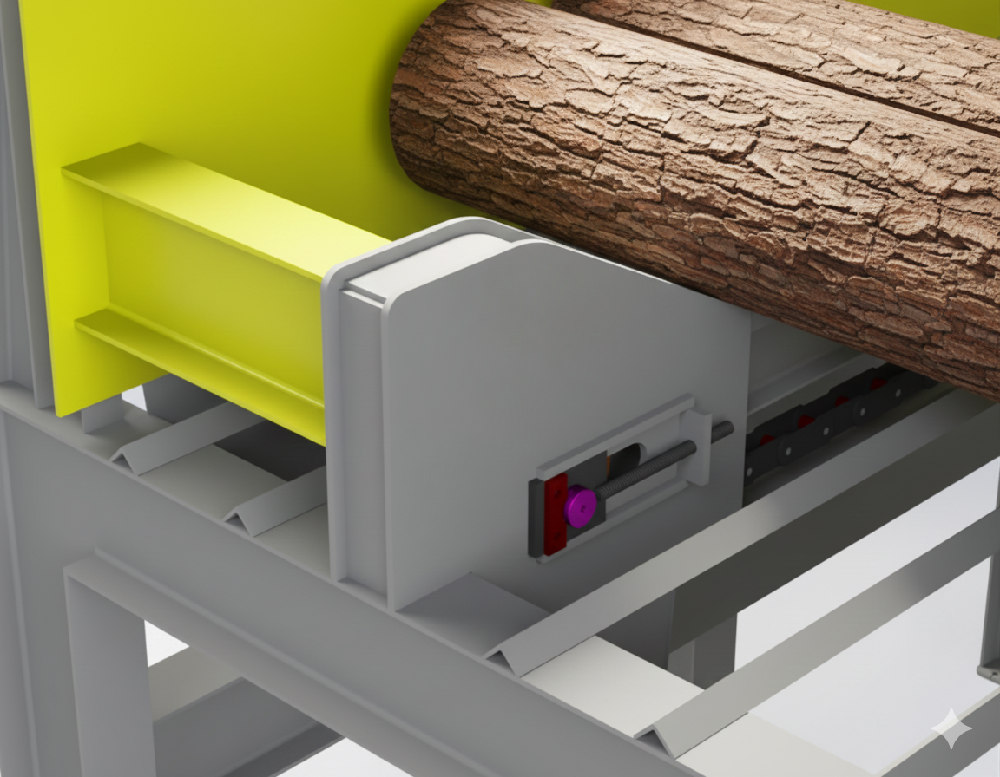
Ao girar a barra roscada, o eixo é deslocado, aplicando ou aliviando a tensão. O ajuste é vital para evitar o salto da corrente e minimizar o desgaste.
Acesso para Manutenção de Engrenagem
As cabeceiras possuem aberturas estratégicas (saídas) na parte inferior, permitindo a fácil remoção das engrenagens FALCÃO Z9.
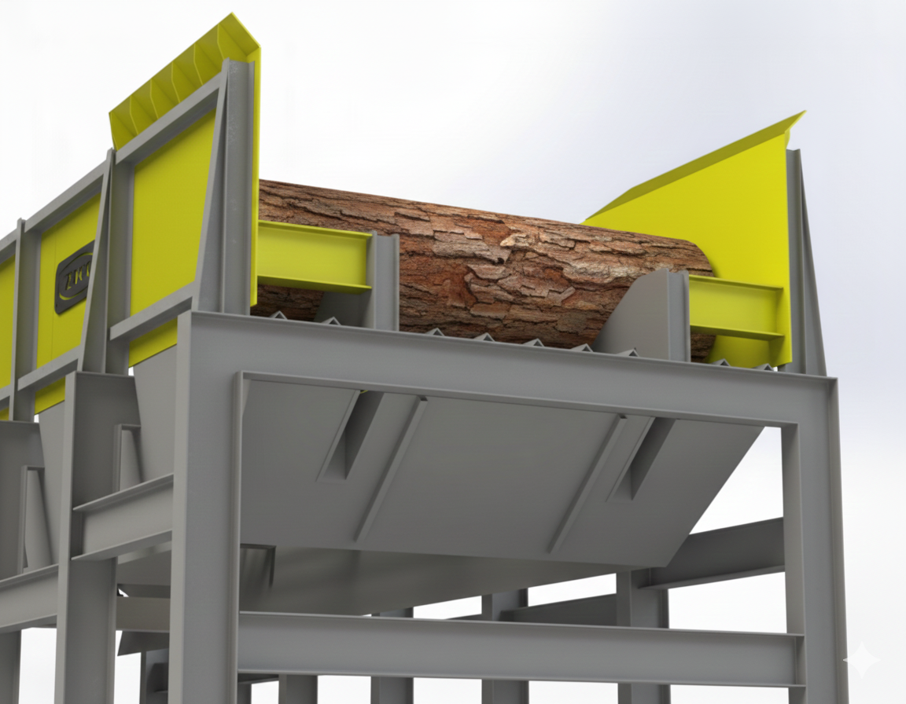
Remoção de Eixo de Tração
Para substituição de rolamentos ou eixo. Procedimento de ALTA COMPLEXIDADE - Requer LOTO.
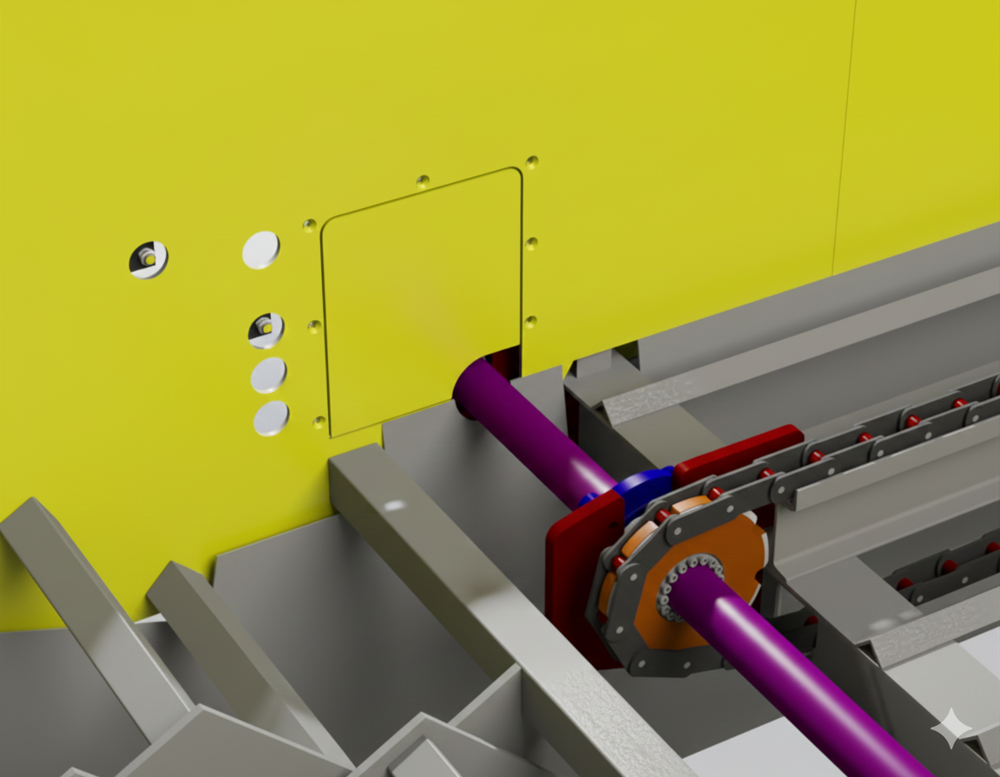
- Bloqueio (LOTO): Desenergize o equipamento.
- Acesso: Remova a tampa lateral.
- Desengate: Solte as correntes Falcão (Carga) e a corrente de Redução.
- Mancais: Solte os Mancais FC 218.
- Retirada: Remova o eixo pela lateral.
Porta de Acesso Interno (Alçapão Inferior)
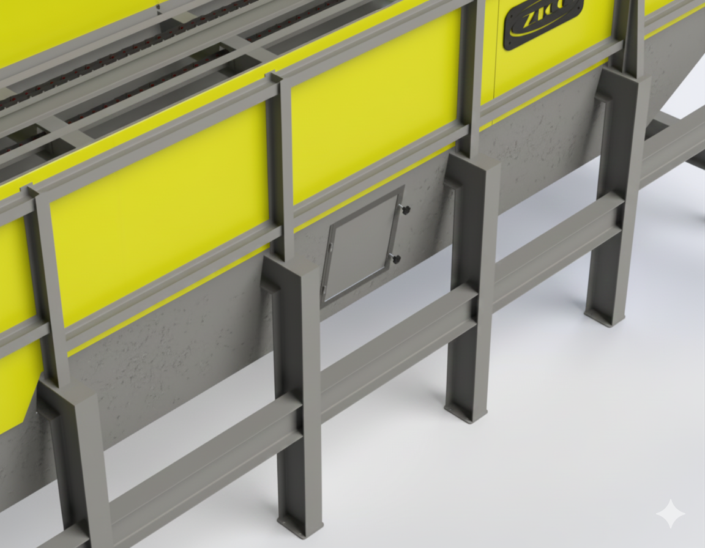
Na parte inferior, ao lado esquerdo do funil de descarga, existe uma porta de acesso interno (alçapão). Esta abertura foi projetada para permitir o acesso seguro à parte interna da esteira para limpeza e inspeção.
IMPORTANTE
O acesso por esta porta só deve ser feito com o equipamento completamente desligado e bloqueado (LOTO).
Motor de Tração e Ajuste da Corrente
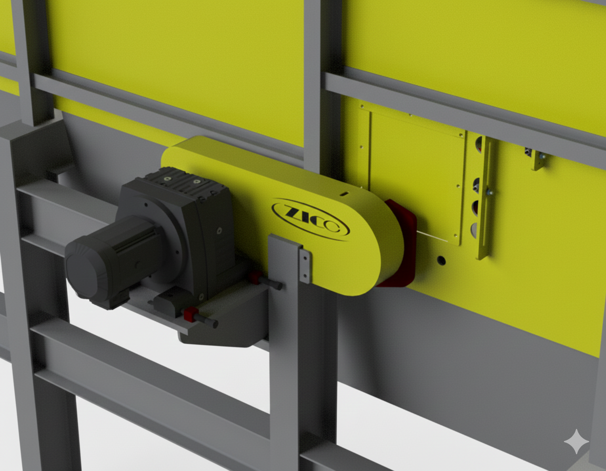
O acionamento da esteira é feito por um motoredutor. A tensão correta da corrente é crucial e é realizada por meio de ajustes laterais na base do motor.
- Segurança (LOTO): Bloqueie o equipamento.
- Tensionamento: Gire os parafusos de ajuste na base. Ao apertar, o motoredutor é deslocado lateralmente, esticando a corrente.
- Fixação: Aperte firmemente os parafusos principais da base.
1.2 Tabelas Técnicas e Diagnóstico
Lista de Componentes
| Função | Componente | Especificação Téc. | Qtd. | Ação |
|---|---|---|---|---|
| Tração Principal | Motoredutor | R107 DRN112MB4 (6,0cv) Na12 i141 | 1 | shopping_cart Cotar |
| Primeira Redução | Engrenagem Saída | 2.120.14 | 1 | shopping_cart Cotar |
| Engrenagem Eixo | 2.120.22 | 1 | shopping_cart Cotar | |
| Corrente Tração | FALCÃO, Passo 101.6mm | 26500mm | shopping_cart Cotar | |
| Esteira | Engrenagem Esteira | FALCÃO Z9 | 4 | shopping_cart Cotar |
| Fixação | Dispositivo | SITLOCK 90 x 130 | 3 | shopping_cart Cotar |
| Suporte Eixo | Mancal / Rolamento | FC 218 / EX 218 | 3 | shopping_cart Cotar |
| Esticador | Rolamento | 6212 | 4 | shopping_cart Cotar |
Plano de Lubrificação
| Componente | Lubrificante | Aplicação | Frequência |
|---|---|---|---|
| Redutor R107 | Óleo ISO VG 220 | Banho de Óleo (Salpico) | Troca Anual / Nível Mensal |
| Mancais (EX 218) | Graxa NLGI 2 EP | Pino Graxeiro | Mensal (ou 500h) |
| Esticador (6212) | Graxa NLGI 2 EP | Manual | Mensal |
| Correntes | Óleo Adesivo | Manual/Auto | Semanal |
Diagnóstico de Falhas
Causa: Falha Elétrica ou Sobrecarga Mecânica.
Ação: Verificar disjuntor. Checar superaquecimento do R107. Remover toras presas.
Causa: Tensionamento Insuficiente ou Desgaste.
Ação: Ajustar o esticador. Medir o passo da corrente e verificar desgaste nos dentes.
Causa: Rolamento falhando ou Sit-Lock solto.
Ação: Injetar graxa. Reapertar Sit-Lock. Planejar troca do rolamento EX 218.
Causa: Retentor do Redutor R107.
Ação: Completar nível. Substituir retentores.
stairs 2. Sistema Unitizador de Toras Stepfeeder
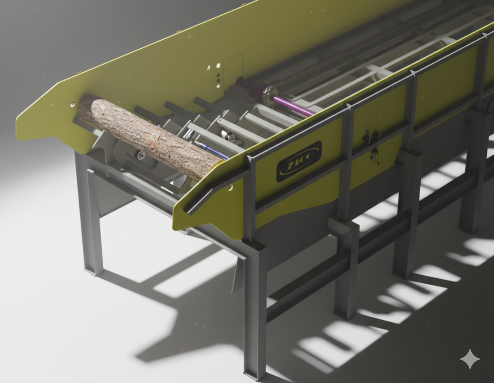
Função: Precisão na Unitização (Por que ele é crucial)
A função primordial deste equipamento é atuar como uma "fila organizada" para as toras na linha de produção.
- Unitização: Ele recebe um fluxo maciço e desordenado de toras (o "bunching") e o converte em um fluxo unitário, garantindo que apenas uma tora por vez seja alimentada no próximo processo (descascamento, medição, serraria).
- Espaçamento Controlado: O sistema garante o espaçamento uniforme entre as toras, permitindo que equipamentos de alta velocidade (como scanners de medição a laser) tenham tempo suficiente para processar e identificar cada peça individualmente.
- Proteção do Processo: Ao impedir a sobrecarga (duas ou mais toras juntas), ele protege o maquinário subsequente contra danos e entupimentos, mantendo a cadência de produção constante e previsível.
Componentes de Unitização e Tração
Todos os componentes móveis e de contato direto com as toras foram selecionados para minimizar o desgaste e garantir a longevidade:
- Berços (Flights) e Guias: Fabricados com materiais de alta resistência à abrasão (como aços HAR ou revestimentos resistentes), assegurando a unitização precisa mesmo após longos períodos de uso intensivo.
- Sistema de Correntes: Utiliza correntes de passo largo com alta reserva de segurança e baixa manutenção, garantindo tração confiável e resistência contra falhas por fadiga.
Mecanismo de Liberação Sincronizada
A liberação da tora é estritamente condicionada e controlada pelo Sistema de Automação (CLP):
- Espera Ativa: A tora permanece contida na Posição de Espera, prevenindo seu avanço descontrolado para a serra.
- Sinal de Demanda: O CLP recebe o sinal da Serra Log Split Saw indicando que seu transportador de entrada está livre e pronto para o próximo ciclo de processamento.
- Transferência: Somente após receber o sinal de demanda, o Step Feeder aciona o mecanismo de avanço para liberar a tora unitizada.
2.1 Benefício para Manutenção: Vigas Removíveis
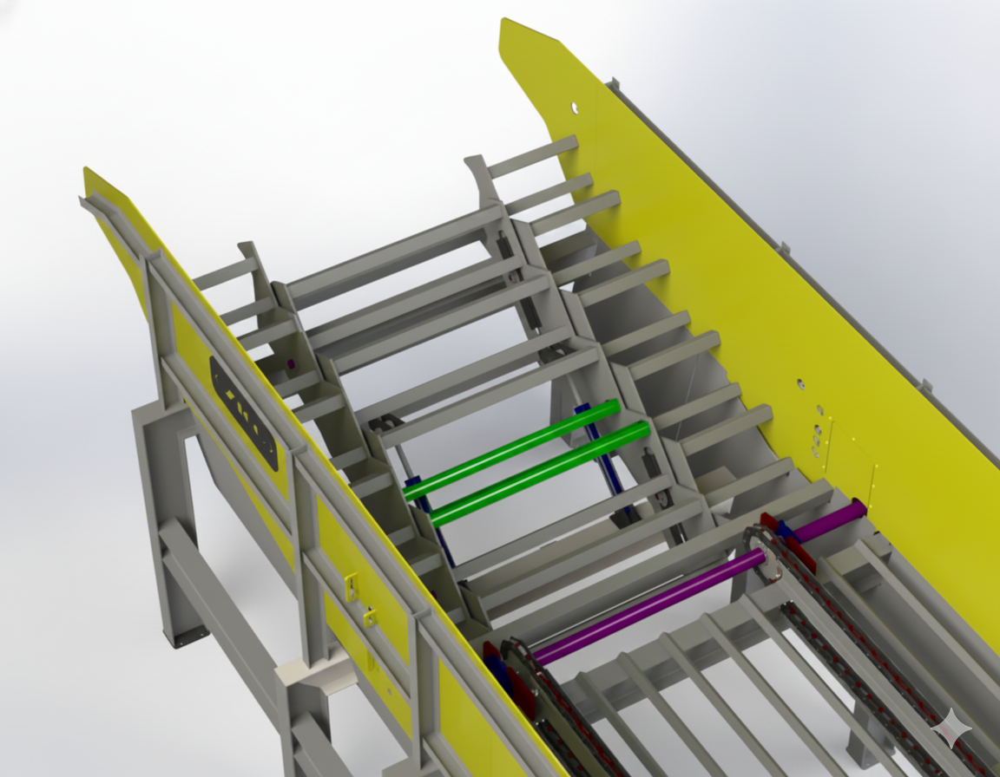
O design do Steep Feeder incorpora características que visam otimizar o tempo de manutenção e garantir o acesso seguro aos componentes internos essenciais, como os cilindros hidráulicos.
As vigas de suporte em destaque (identificadas nas imagens), pintadas na cor verde, não são estruturas fixas permanentes. Elas foram projetadas para serem removíveis, facilitando o acesso direto aos cilindros hidráulicos localizados abaixo ou adjacentes a elas.
Vantagens Significativas
- Acesso Desobstruído: Proporciona um espaço adequado e sem impedimentos para a inspeção, reparo ou substituição dos cilindros hidráulicos.
- Redução de Tempo de Parada (Downtime): Agiliza os procedimentos de manutenção, pois evita a necessidade de desmontar grandes seções da estrutura para acessar os cilindros, impactando positivamente na disponibilidade operacional do equipamento.
- Segurança Aprimorada: Minimiza a necessidade de posturas ou ferramentas inadequadas, tornando a manutenção mais segura para o técnico.
2.2 Tabelas Técnicas e Lubrificação (Stepfeeder)
Lista de Componentes e Especificações
| Componente | Especificação | Qtd. | Função Técnica | Ação |
|---|---|---|---|---|
| Cilindro Hidráulico | 50 x 36 x 510 | 2 | Responsável por executar o movimento de elevação ou avanço do "degrau" (step), separando a tora e enviando-a para o próximo equipamento. | shopping_cart Cotar |
| Ponteira rotular de articulação | M27 x RTH05027 | 2 | Componente utilizado para fixação de cilindro hidráulico. | shopping_cart Cotar |
| Rolamento de Guia | 6210 RS C3 | 8 | Rolamento rígido de esferas com vedação nos dois lados (6210) e folga C3, utilizado nas articulações ou nos eixos das roldanas de guia, suportando o movimento das toras. | shopping_cart Cotar |
| Roldana de Guia | Peça usinada (Alojamento) | 4 | Componente usinado que aloja os rolamentos 6210 e guia o movimento das toras ao longo do transportador. | shopping_cart Cotar |
| Motor Elétrico | Trifásico 7,5CV | 1 | Aciona a bomba da Unidade Hidráulica, convertendo energia elétrica em potência hidráulica. | shopping_cart Cotar |
| Unidade Hidráulica | Reservatório 250 Litros | 1 | Central de potência do sistema. Contém a bomba, válvulas e fluido, fornecendo a pressão necessária para o Cilindro Hidráulico. | shopping_cart Cotar |
Plano de Lubrificação
| Componente | Tipo de Lubrificante | Especificação Sugerida | Método de Aplicação | Frequência Inicial |
|---|---|---|---|---|
| Rolamentos de Guia 6210 RS C3 | Graxa de Extrema Pressão (EP) | Graxa à base de Lítio Complexo NLGI 2 EP | Aplicar a graxa através dos pinos graxeiros nas roldanas ou articulações (se houver). | Mensal (Devido ao ambiente de madeira, poeira e carga de impacto). |
| Unidade Hidráulica (Reservatório 250L) | Óleo Hidráulico | Óleo Antidesgaste (AW) ISO VG 46 ou ISO VG 68 | Verificar o nível pelo visor e completar. | Troca Anual (ou a cada 2.000 a 4.000 horas); Verificação Diária do nível e temperatura. |
| Motor Elétrico (7,5 CV) | Graxa para Rolamentos de Motor | Graxa à base de Poliureia ou Lítio de Alta Performance NLGI 2 | Aplicar a graxa através do pino graxeiro na tampa do motor (se for regraxável). | Anual (Verificar o motor é regraxável e seguir o plano específico do fabricante). |
| Cilindros Hidráulicos 50 x 36 x 510 | Fluido Hidráulico (Vedações) | O mesmo Óleo Hidráulico usado na Unidade. | Não requer lubrificação externa. Inspecionar a haste quanto a riscos e vazamentos. | Diária (Inspeção visual da haste). |
NOTAS DE MANUTENÇÃO
- Fluido Hidráulico: A qualidade do fluido é crítica. Monitore a temperatura e a contaminação do óleo para garantir o ciclo de vida da bomba e válvulas.
- Rolamentos Vedados: Embora o rolamento 6210 RS C3 seja vedado, a lubrificação regular é importante para renovar a graxa interna e criar uma "barreira" contra a poeira de madeira.
- Vazamentos: Devido ao uso de 2 cilindros, é essencial realizar inspeções diárias para identificar qualquer vazamento que comprometa a força de separação da tora.
Diagnóstico de Falhas (Stepfeeder)
Causa Provável: 1. Baixa Pressão Hidráulica; 2. Falha de Válvula Direcional; 3. Óleo Degradado/Frio.
Verificação: O manômetro indica pressão baixa? A bobina da válvula está travada? O óleo está muito viscoso (frio)?
Ação Imediata: Verificar nível de óleo e bomba. Checar sinal elétrico do CLP para a válvula. Se frio, ligar aquecedor ou aguardar recirculação.
Causa Provável: Vazamento Interno do Cilindro.
Verificação: O cilindro 50x36x510 está com falha nas vedações do pistão, permitindo passagem de óleo.
Ação Imediata: Inspecionar a haste por riscos. Planejar reparo ou substituição imediata do cilindro.
Causa Provável: 1. Falha de Rolamento/Roldana; 2. Desalinhamento.
Verificação: Ruído audível de moagem vindo das Roldanas. Uma das roldanas pode estar desalinhada causando atrito lateral.
Ação Imediata: Inspecionar Rolamentos 6210 RS C3. Se superaquecidos, substituir. Alinhar o paralelismo das 4 roldanas.
Causa Provável: Bomba Hidráulica com Problemas.
Verificação: A bomba está com desgaste e trabalhando com sobrecarga, forçando o motor de 7,5 CV.
Ação Imediata: Verificar a amperagem do motor. Se alta, a bomba pode estar avariada.
2.3 Segurança Operacional (Stepfeeder)
A operação e manutenção da Escada Unitizadora exigem estrito cumprimento das normas.
PROCEDIMENTO LOTO (Lockout/Tagout)
Bloqueio de Energia: Antes de qualquer intervenção, o equipamento deve ser desligado de todas as fontes (elétrica, hidráulica, pneumática).
Fontes: O motor elétrico (7,5 CV) e a unidade hidráulica devem ser bloqueados individualmente.
Energia Armazenada: Certifique-se de que a pressão hidráulica dos cilindros seja liberada para evitar movimentos inesperados da escada.
Riscos Críticos e Proteções
- Zona de Esmagamento: A área de movimentação dos cilindros e da escada é uma zona crítica. É PROIBIDO o acesso durante a operação.
- Carenagens: Nunca opere com proteções removidas (especialmente a cobertura amarela da corrente).
- Posição de Espera: A tora na posição de espera está tensionada. Nunca tente reposicioná-la manualmente com o equipamento ligado.
EPI Obrigatório: Capacete, óculos de segurança, luvas e calçados de segurança em toda a área de operação.
water_drop 3. Unidade Hidráulica
O sistema é alimentado por uma unidade hidráulica dedicada, responsável por fornecer a força motriz para os cilindros do Stepfeeder.
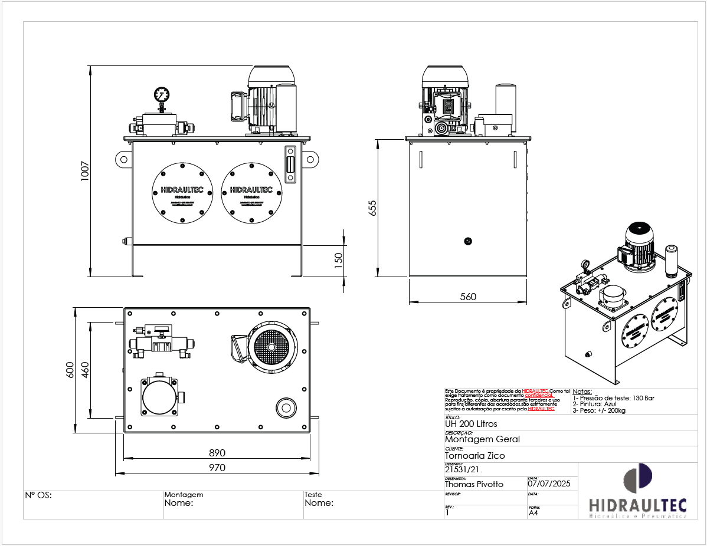
Vista Geral e Dimensões de Montagem
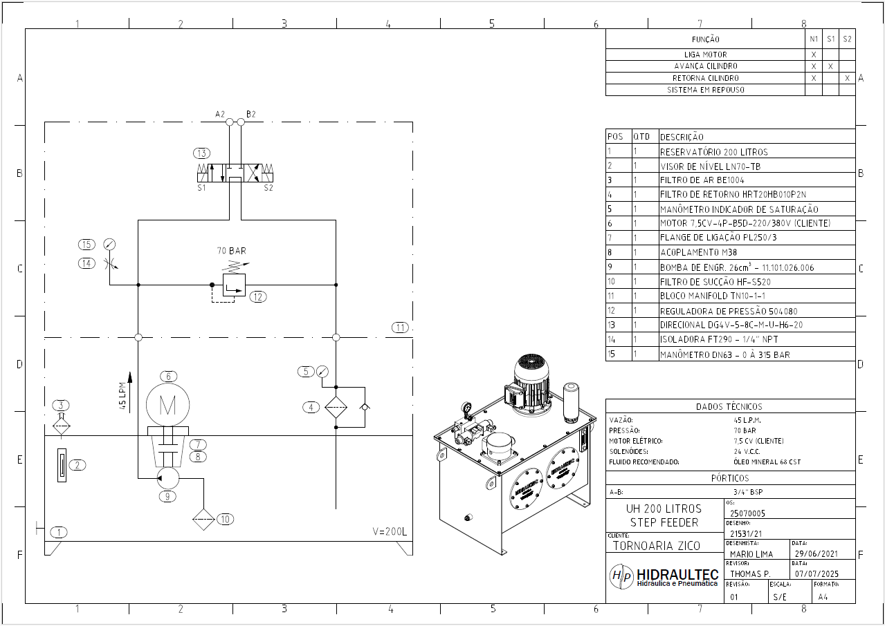
Esquema de ligação das válvulas e bomba
carpenter 4. Serra Log Split Saw
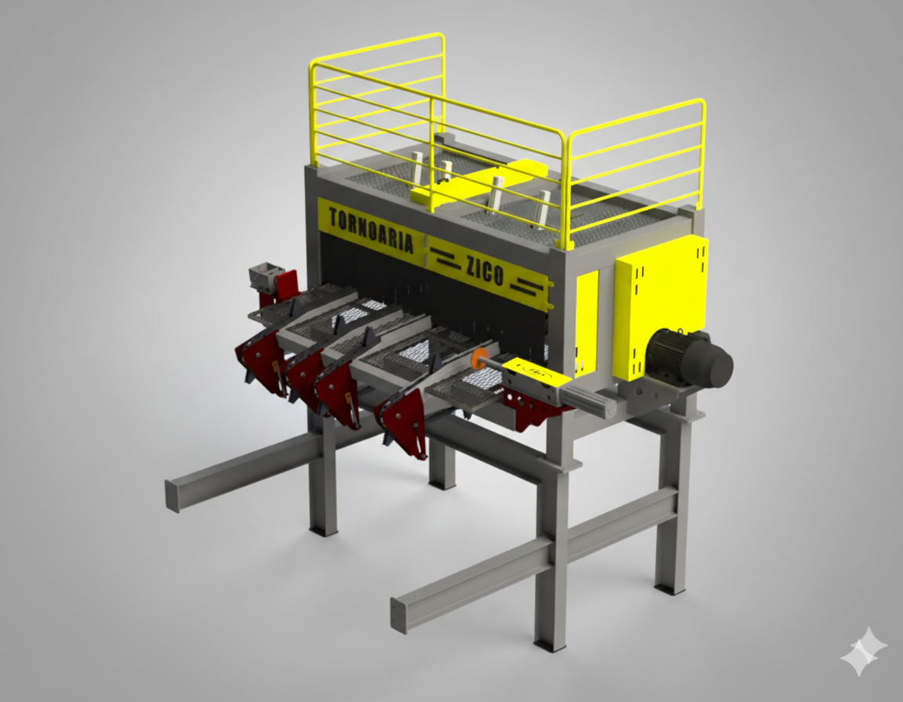
Finalidade e Visão Geral
O Processador de divisão de toras ZICO representa uma solução de engenharia avançada para o processamento primário. Sua finalidade essencial é a maximização imediata do aproveitamento volumétrico.
Ao dividir a tora em duas metades com precisão longitudinal controlada, o equipamento elimina as irregularidades e curvaturas (sweep) no início do processo. Este controle dimensional no start da produção reduz o desperdício nas etapas subsequentes de descascamento e usinagem.
Qualidade Construtiva
- Estrutura Reforçada: Fabricada com perfis de aço de alta espessura para absorver cargas dinâmicas e vibrações inerentes ao corte de madeira densa.
- Componentes de Ponta: Todos os sistemas de controle (CLP), motorização, sensores e atuadores pneumáticos são de fornecedores de primeira linha.
Princípio de Processamento Automatizado
O processador opera em ciclo contínuo, gerenciando três toras em estágios sequenciais:
- Centramento Ativo Mecânico: A tora é alinhada de forma precisa e repetitiva por um Cilindro Pneumático contra um Batente de Referência Regulável.
- Fixação Dinâmica: Na zona de corte, quatro Calçadores Pneumáticos mantêm uma pressão controlada sobre a tora, assegurando estabilidade contra o torque das lâminas.
4.1 Centrador Destopadeira
O sistema de centragem tem a função de posicionar o eixo de corte da tora com precisão antes que ela seja desdobrada. Ele combina uma atuação pneumática automática com a possibilidade de ajuste fino manual.
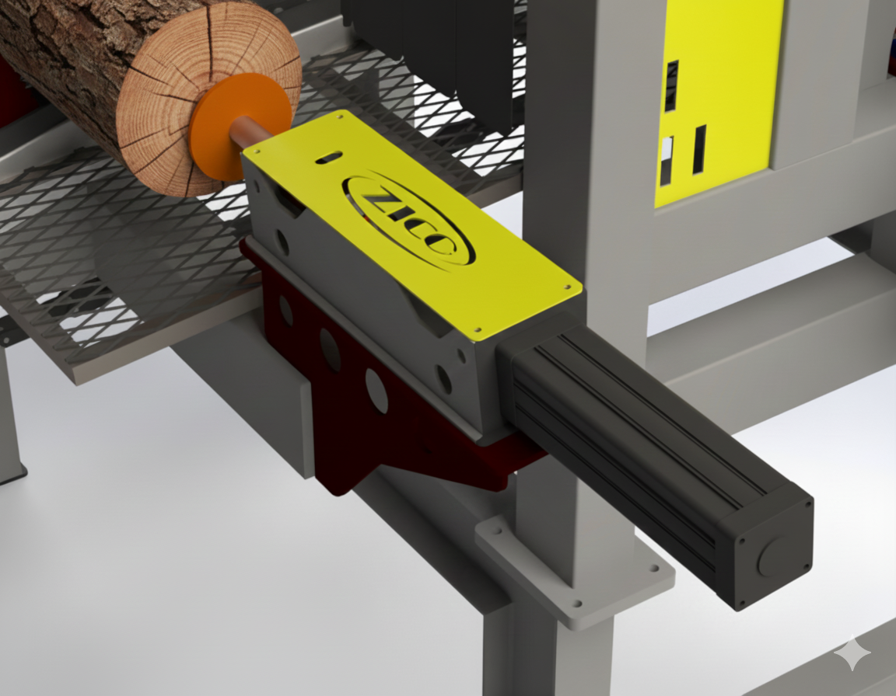
Define o ponto zero (plano de corte). Ajustável via Rosca de Fuso.
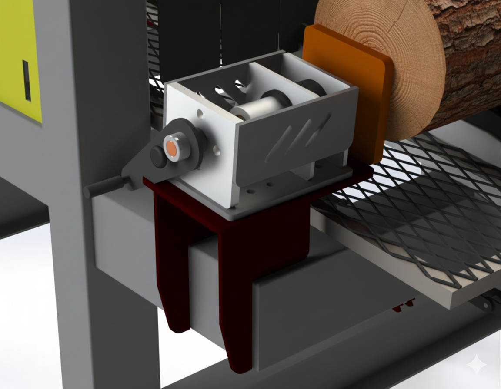
Cilindro pneumático que move a tora lateralmente contra o batente.
Ciclo de Funcionamento (Automático)
- Posicionamento: A Esteira de Arraste transporta a tora para a Posição de Centramento.
- Atuação: Um sensor confirma a presença e o CLP aciona o Cilindro Pneumático.
- Alinhamento: O cilindro estende-se, empurrando a tora com força controlada até o contato firme com o Batente.
- Confirmação: Um sensor de contato verifica se a tora está travada transversalmente.
- Liberação: O CLP libera o avanço da tora para a Posição de Corte.
Ajuste Manual do Ponto de Corte (Offset)
O operador pode utilizar a Rosca de Fuso do Batente de Referência para ajustar a distância em relação ao centro das serras. Isso permite:
- Realizar um corte exatamente no centro geométrico.
- Compensar diâmetros variados.
- Definir um corte propositalmente fora de centro (ex: desdobro 60/40).
4.2 Arraste e Fixação (Calçadores)
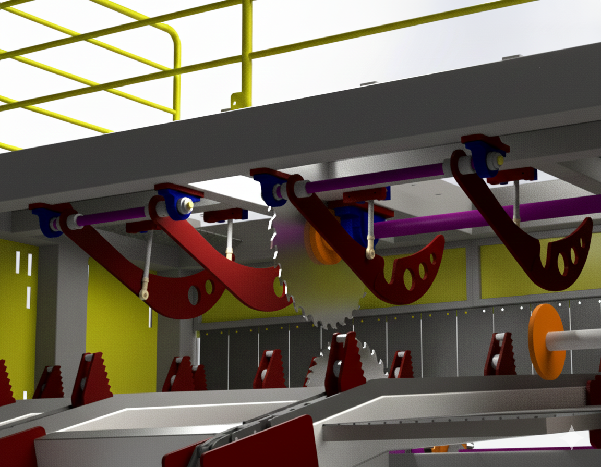
O sistema de fixação é composto por quatro (4) Calçadores Pneumáticos localizados na Posição de Corte. Sua função é garantir a estabilidade da tora, neutralizando vibrações e forças de reação.
Controle Dinâmico de Pressão (CDP)
- Atuação Contínua: Os calçadores permanecem pressurizados sempre que a tora está na zona de corte.
- Balanceamento de Forças: A pressão pneumática é calibrada para ser inferior à força de arraste da corrente. Isso permite que a tora avance progressivamente, mas mantenha-se pressionada contra a mesa, eliminando folgas ("chicoteamento") durante o corte.
4.3 Sistemas de Tensionamento
Correias de Tração (Motor Principal)
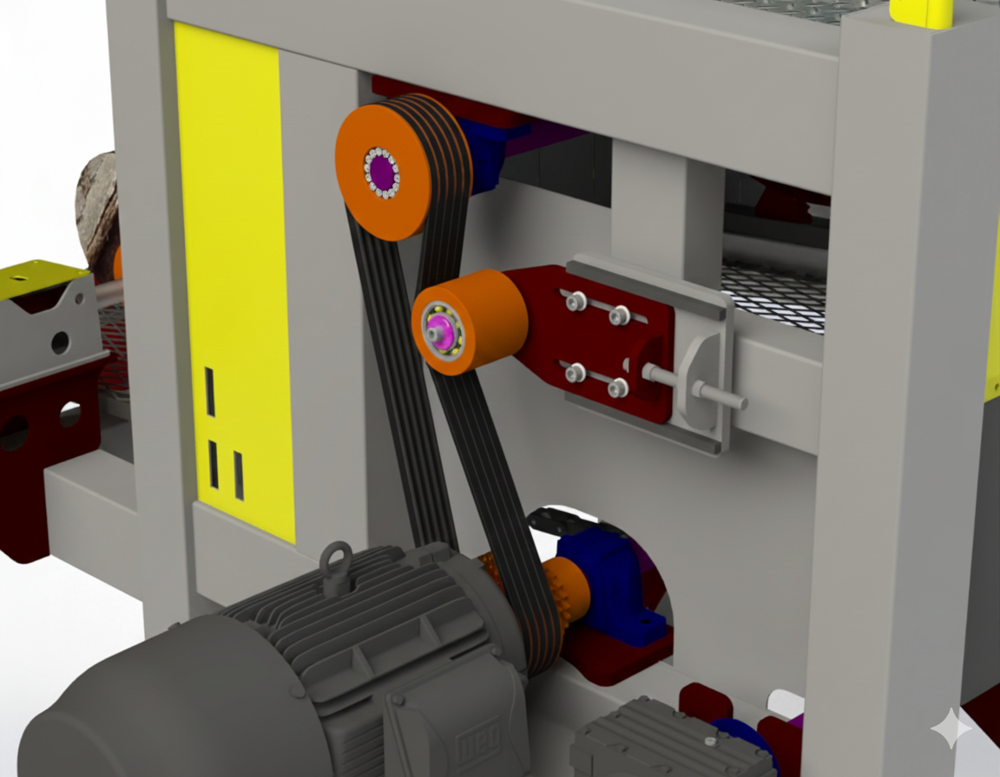
Transmite a energia do Motor (40cv) para o eixo das serras. O ajuste é feito pelo mecanismo de parafusos/tirantes na base do motor (estrutura vermelha).
Manutenção: Inspecionar periodicamente a deflexão e rachaduras nas correias em V.
Correntes de Arraste
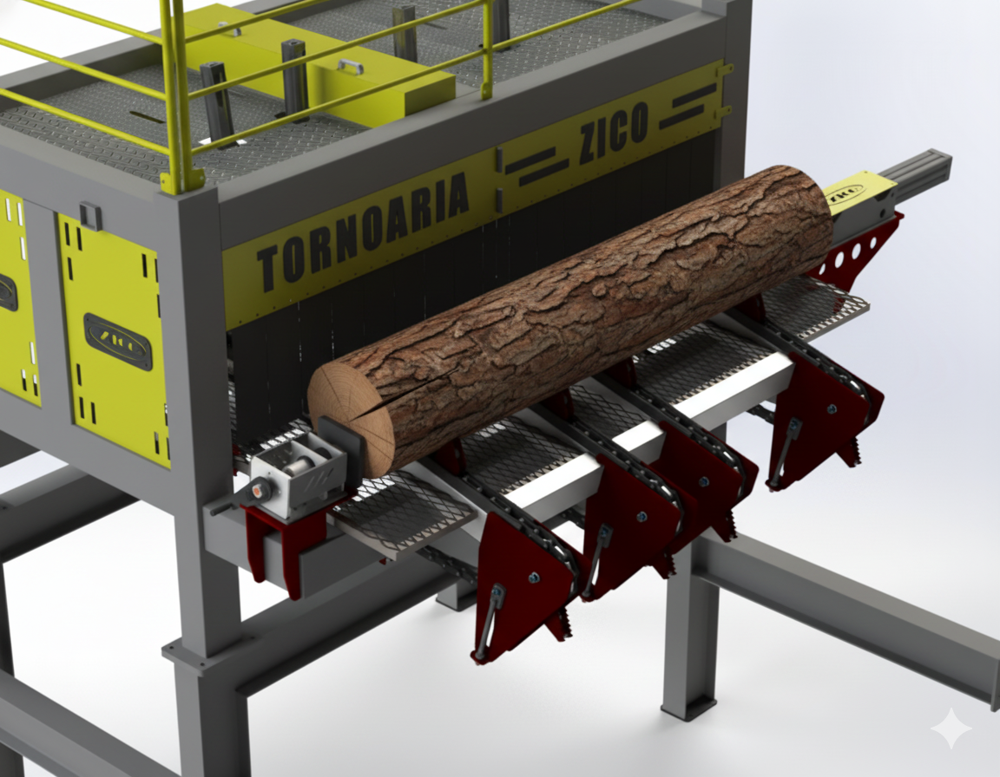
Utiliza um sistema de 3 engrenagens. A Engrenagem Esticador (inferior) é montada em um suporte móvel que permite o deslocamento vertical para manter a tensão uniforme.
4.4 Procedimento de Troca de Serras
PERIGO: LOTO OBRIGATÓRIO
Antes de iniciar a troca, é MANDATÓRIO que o equipamento seja COMPLETAMENTE DESENERGIZADO E BLOQUEADO. O acesso ao módulo de corte deve ser feito somente após a confirmação do zero energético (inércia do disco parada).
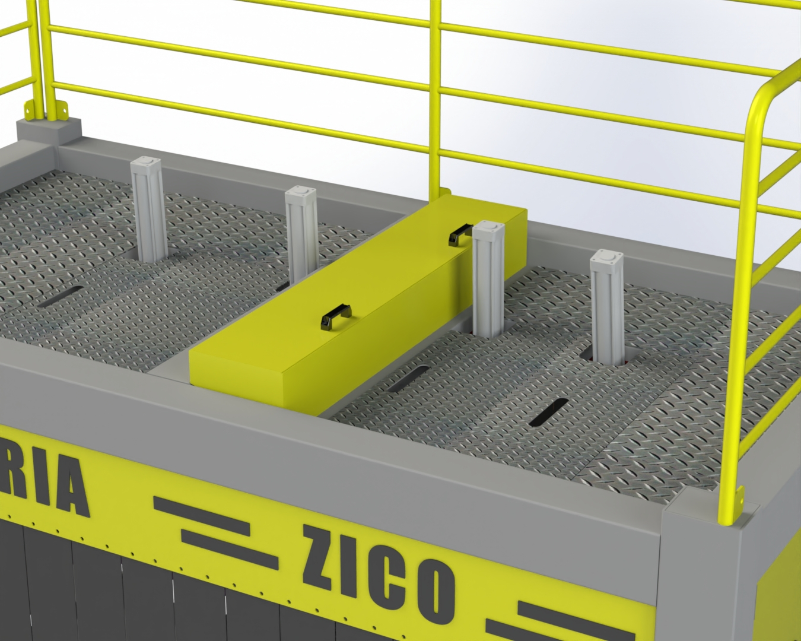
1. Estado Operacional
Proteções fechadas.
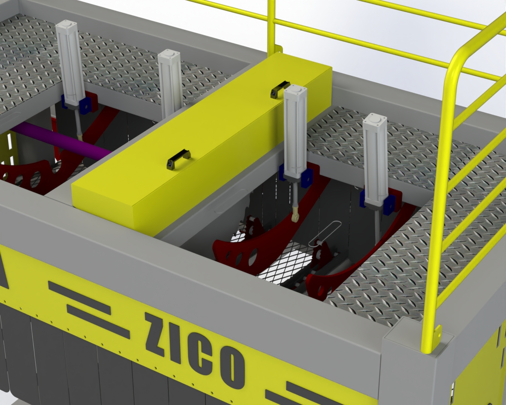
2. Acesso
Abertura dos compartimentos superiores.
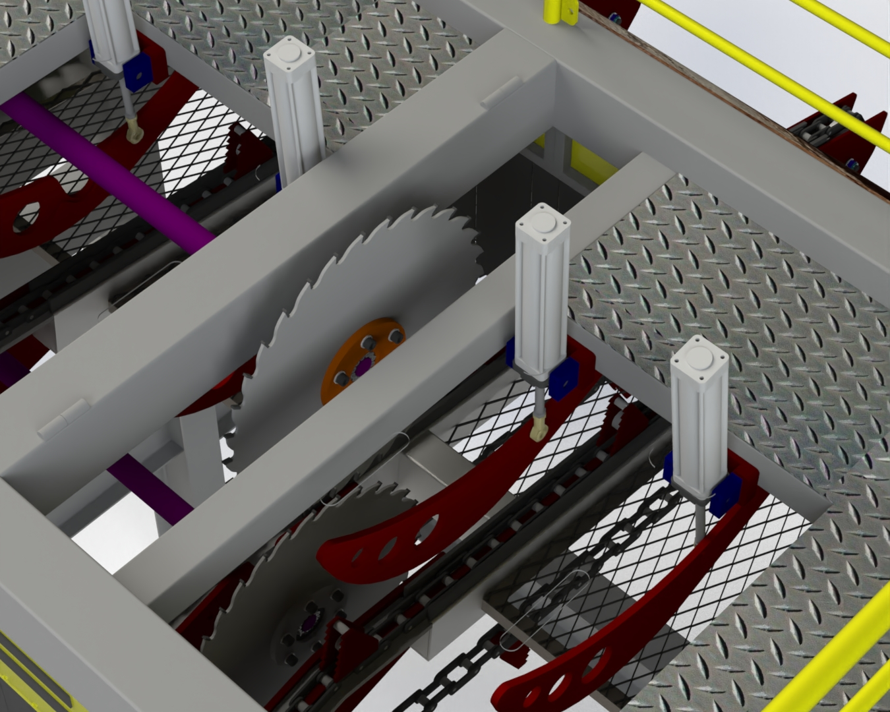
3. Troca
Acesso aos flanges (laranja) e discos.
Boas Práticas
- Trabalho em Dupla: Fortemente recomendado para manuseio seguro das lâminas pesadas.
- Luvas Anticorte: Indispensável para evitar cortes severos ao manusear os dentes da serra.
- Inspeção Visual: Ao trocar, verifique se há dentes de vídea quebrados ou trincas no corpo do disco.
4.5 Tabelas Técnicas e Lubrificação (Serra)
Lista de Componentes Serra Log Split Saw
| Item | Componente | Especificação Técnica | Qtd. | Ação |
|---|---|---|---|---|
| 001 | Motor Principal (Serras) | W22 Motofreio IR3 Premium 40cv | 1 | shopping_cart Cotar |
| 002 | Motoredutor (Arraste) | FA77/G DRN90SP4 (2,0cv) Na12 i142,27 | 1 | shopping_cart Cotar |
| 003 | Correia de Tração | Correia 5V x 850 | 5 | shopping_cart Cotar |
| 004 | Polia de Tração | 5V com 5 canais (Sup. Ø195 – Inf. Ø220) | 2 | shopping_cart Cotar |
| 005 | Anel de Fixação Polia | Sitlock 85x55 | 3 | shopping_cart Cotar |
| 006 | Engrenagem Tração Serras | ASA 1.60.22 (Acoplada por Corrente) | 2 | shopping_cart Cotar |
| 007 | Rolamento Eixos de Serra | 22213 (Autocompensador de rolos) | 4 | shopping_cart Cotar |
| 008 | Bucha de Fixação | Bucha H313 | 4 | shopping_cart Cotar |
| 009 | Mancal Eixo de Serra | Mancal SN 523 | 4 | shopping_cart Cotar |
| 010 | Rolamento Tensionador | 6309 DDU C3 | 2 | shopping_cart Cotar |
| 011 | Flange de Fixação da Serra | Fixada por Sitlock 75x45 | 2 | shopping_cart Cotar |
| 012 | Anel de Fixação Flange | Sitlock 75x45 | 2 | shopping_cart Cotar |
| 013 | Engrenagem Tração Arraste | ASA 2120 Z12 (12 dentes) | 8 | shopping_cart Cotar |
| 015 | Engrenagem Esticador | 1.120.12 | 4 | shopping_cart Cotar |
| 016 | Anel de Fixação Eng. Arraste | Sitlock 80x50 | 4 | shopping_cart Cotar |
| 017 | Mancal Eixo de Tração | Mancal FLANGEADO REDONDO | 5 | shopping_cart Cotar |
| 018 | Rolamento Eixo Tração | EX 210 (Com colar excêntrico) | 5 | shopping_cart Cotar |
| 019 | Rolamento Cabeceira | 6210 | 8 | shopping_cart Cotar |
| 020 | Rolamento Esticador | 6008 | 8 | shopping_cart Cotar |
| 021 | Cilindro Pneumático (Calçadores) | Ø 63 Curso 300mm | 4 | shopping_cart Cotar |
| 022 | Mancal Calçadores | Mancal P208 (Pedestal) | 4 | shopping_cart Cotar |
| 023 | Rolamento Calçadores | EX 208 (Com colar excêntrico) | 4 | shopping_cart Cotar |
| 024 | Raspador de Guia | 63 x 50 x 10 | 2 | shopping_cart Cotar |
| 025 | Corrente de Arraste | Corrente ASA 2120 (Passo Duplo) | - | shopping_cart Cotar |
| 027 | Cilindro Pneumático (Centragem) | Ø125 x 3560mm | 1 | shopping_cart Cotar |
Plano de Lubrificação
| Componente | Lubrificante | Especificação | Frequência |
|---|---|---|---|
| Motoredutor (Arraste) | Óleo Engrenagens | Mineral (CLP) ISO VG 220 | Anual (4000h) / Nível Mensal |
| Motor Principal | Graxa Rolamento Motor | Lítio/Poliuréia NLGI 2 | Anual (Conf. Fabricante) |
| Rolam. Eixo Serra (22213) | Graxa EP | Lítio Complexo NLGI 2 EP | Mensal (Carga de Impacto) |
| Rolam. Arraste (EX 210) | Graxa EP | Lítio Complexo NLGI 2 EP | Mensal |
| Rolam. Esticador (6309...) | Graxa EP | Lítio Complexo NLGI 2 EP | Mensal ou Bimensal |
| Corrente (ASA 2120) | Óleo Adesivo | ISO VG 150/220 | Diária/Semanal |
| Cilindros Pneumáticos | Óleo Sistema Pneumático | Óleo ISO VG 32 | Semanal (Nível Lubrefil) |
| Raspador de Guia | Lubrificante Seco | Grafite ou PTFE | Semanal |
Diagnóstico de Falhas (Serra Log Split Saw)
Causa Provável: 1. Falha de rolamento no eixo; 2. Serra/Flange solta.
Verificação: Ruído alto nos mancais SN 523 ou rolamento 22213 falhando. Serra solta na flange ou Sitlock 75x45 afrouxou.
Ação Imediata: Parar imediatamente (LOTO). Inspecionar e relubrificar/trocar rolamento. Reapertar parafusos da serra e torque do Sitlock.
Causa Provável: Baixa tensão da correia.
Verificação: As 5 correias 5V x 850 estão frouxas, causando deslizamento na polia.
Ação Imediata: Ajustar sistema tensor e verificar rolamentos 6309 DDU C3.
Causa Provável: 1. Falha no motoredutor; 2. Corrente patina/quebra.
Verificação: Motoredutor FA77/G com baixo nível de óleo ou falha. Corrente ASA 2120 frouxa ou tora travada.
Ação Imediata: Verificar nível de óleo ISO VG 220. Ajustar tensionamento da corrente e inspecionar engrenagens Z12.
Causa Provável: Rolamento do eixo de arraste falhando.
Verificação: Ruído de moagem no mancal flangeado. Rolamento EX 210 sem lubrificação.
Ação Imediata: Injetar graxa NLGI 2 EP. Se persistir, planejar troca.
Causa Provável: Sitlock afrouxado.
Verificação: As engrenagens ASA 2120 deslizam no eixo.
Ação Imediata: Parar (LOTO) e reapertar torque do Sitlock 80x50.
Causa Provável: Pressão pneumática baixa.
Verificação: Regulador não fornece pressão suficiente para os 4 cilindros Ø63.
Ação Imediata: Ajustar pressão da linha principal e da válvula.
Causa Provável: Falha nas vedações internas.
Verificação: Vazamento audível ou movimento lento em um dos cilindros.
Ação Imediata: Verificar haste (riscos) e planejar troca do cilindro ou reparo (kit vedação).
Causa Provável: Guia suja ou dano mecânico.
Verificação: Acúmulo de pó/resina. Falha no raspador de guia.
Ação Imediata: Limpar guias e inspecionar rolamentos EX 208 e mancais P208.
flip_camera_android 5. Transposição e Tombador
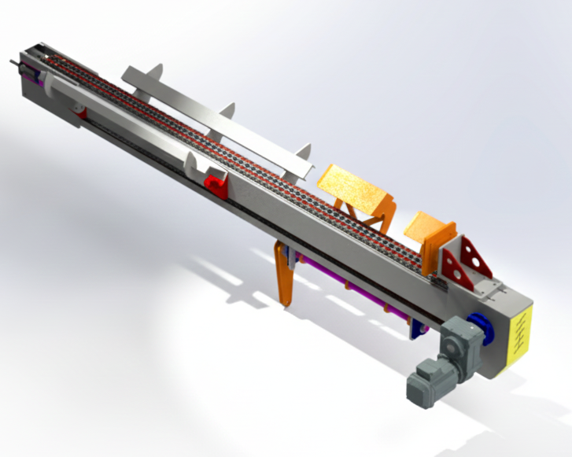
Visão Geral
Após o corte longitudinal, as duas metades da tora precisam ser posicionadas corretamente para o próximo estágio. O sistema de transposição e tombador realiza essa tarefa, virando a tora com a face plana para baixo.
5.2 Acionamento do Tombador
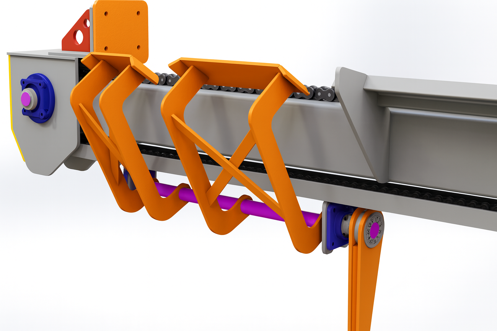
O tombador é o componente responsável por virar uma das meias-toras e direcioná-la corretamente para o Steep Feeder, garantindo fluxo individual e organizado.
Função e Lógica Pneumática
- Tombamento Controlado: Quando a meia-tora chega ao final da esteira e encosta no batente, o contato (ou sensor) aciona o cilindro pneumático.
- Ação Rápida: O cilindro empurra a alavanca articulada (braços laranjas), girando a tora de forma consistente.
- Retorno Automático: Após o movimento, o sistema retorna à posição inicial, aguardando o próximo ciclo.
Ajustes e Regulagem
O sistema permite adaptações conforme o tipo de madeira:
- Curso do Cilindro: Ajustável para tombar meias-toras mais largas ou estreitas.
- Velocidade (Válvulas de Fluxo): Regula a agressividade do tombo (mais suave ou mais rápido) através do escape de ar do cilindro.
5.3 Batente de Posicionamento
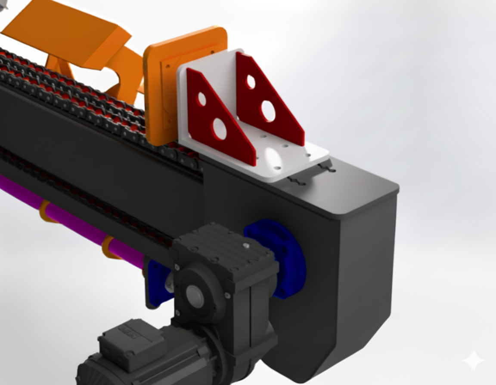
Localizado na extremidade de curso, este componente é projetado para posicionar a meia-tora com precisão para a transferência, minimizando os impactos na estrutura.
Amortecedor de Impacto
- Redução de Rebote: Ao bater no batente, a tora tem sua energia dissipada. Isso evita que a tora "volte" (quique) e saia da posição ideal de tombamento.
- Proteção Estrutural: O amortecedor absorve a força de impacto, protegendo a estrutura da esteira contra danos causados por batidas repetidas.
Regulagem de Posição
O batente possui ajuste longitudinal (via porcas ou fuso). Este ajuste é crítico para garantir que a tora pare exatamente alinhada com os braços do tombador.
5.4 Tensionamento de Correntes
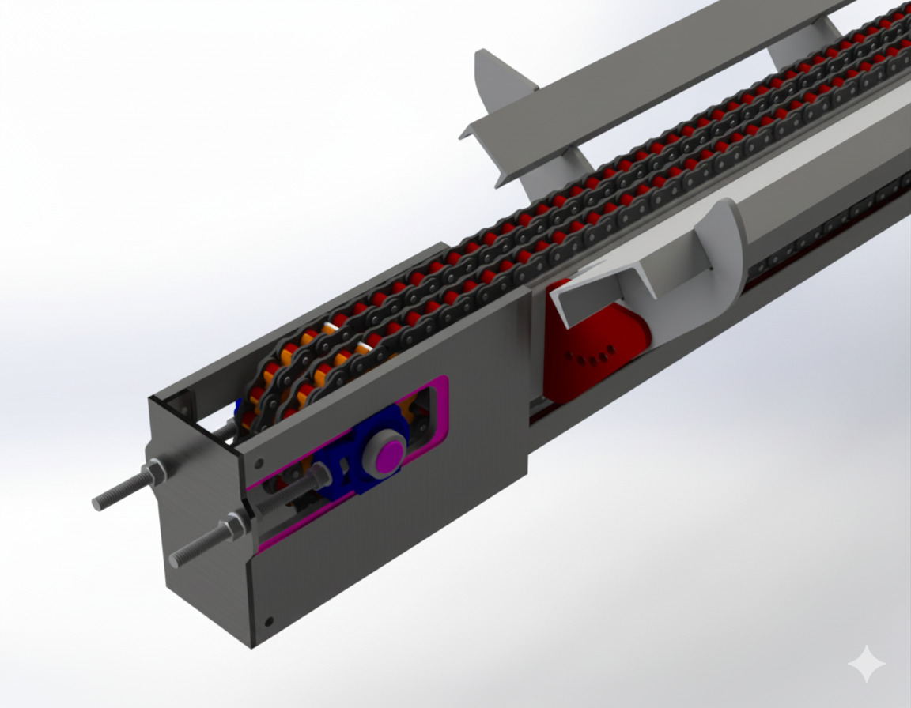
O alinhamento correto da corrente é vital para prevenir o desgaste prematuro das engrenagens e dos mancais.
Procedimento de Ajuste
- Mecanismo: O eixo movido é montado em mancais tipo "T" guiados, acionados por Barras Roscadas na extremidade da esteira.
- Ação: Ao apertar a porca, o eixo se desloca para trás, esticando a corrente.
REGRA DE OURO: ALINHAMENTO
É imprescindível que o tensionamento seja realizado de forma uniforme em ambos os lados. Se um lado for mais apertado que o outro, o eixo fica "atravessado", causando descarrilamento da corrente e desgaste severo das engrenagens.
Manutenção: O acesso para troca de engrenagem é facilitado pela remoção da Tampa Traseira, mas exige aplicação rigorosa de LOTO.
5.5 Lista de Componentes e Lubrificação
Lista de Componentes: Esteira de Transposição
| Componente | Especificação Técnica | Qtd. | Localização | Ação |
|---|---|---|---|---|
| Motoredutor (Tração) | FA67/G DRN90LP4 3,0cv Na55 i32,08 | 1 | Acionamento do Eixo de Tração. | shopping_cart Cotar |
| Engrenagem de Tração | Engrenagem Usinada 120.12 | 2 | Eixo de Tração (lado motor). | shopping_cart Cotar |
| Fixação Engrenagens | Sitlock 80x50 | 2 | Fixa as engrenagens ao eixo. | shopping_cart Cotar |
| Mancal Eixo Tração | Mancal FLANGEADO FC 212 | 2 | Suporte do Eixo de Tração. | shopping_cart Cotar |
| Rolamento Eixo Tração | EX 212 (Colar excêntrico) | 2 | Dentro dos mancais flangeados. | shopping_cart Cotar |
| Rolamento Esticador | EX 210 | 2 | Eixo da Cabeceira de Esticador. | shopping_cart Cotar |
| Mancal T210 | T210 INOX | 2 | Eixo da Cabeceira de Esticador. | shopping_cart Cotar |
| Engrenagem Esticador | Engrenagem Usinada 120.12 | 1 | Roda livre do conjunto tensionador. | shopping_cart Cotar |
| Corrente 120 | Corrente ASA120 de arraste | 15800mm | Roda livre do conjunto tensionador. | shopping_cart Cotar |
Lista de Componentes: Tombador Pneumático
| Componente | Especificação | Qtd. | Função | Ação |
|---|---|---|---|---|
| Cilindro Pneumático | Ø100 x 200 | 1 | Movimento de tombamento/ejeção. | shopping_cart Cotar |
| Mancais (Suporte) | F 210 | 2 | Suporte estrutural do eixo de tombamento. | shopping_cart Cotar |
| Rolamentos | EX 210 | 2 | Permitem o giro do eixo. | shopping_cart Cotar |
| SITLOCK | 80 x 50 | 1 | Fixação do braço do tombador ao eixo. | shopping_cart Cotar |
Plano de Lubrificação (Transposição)
| Componente | Lubrificante | Frequência |
|---|---|---|
| Motoredutor (FA67/G) | Óleo Sintético ISO VG 220 | Verificar Mensal / Troca Anual |
| Rolamentos/Mancais | Graxa Lítio NLGI 2 | A cada 40 - 80 horas |
| Correntes de Arraste | Óleo Adesivo | A cada 8 - 16 horas |
| Eixo do Tombador | Graxa Lítio NLGI 2 | A cada 40 - 80 horas |
Observações de Manutenção
- Motoredutor: Respeite o volume e tipo de óleo. Níveis baixos causam superaquecimento.
- Graxeiras: Lubrifique até sentir ligeira resistência ou ver graxa antiga saindo. Evite excessos para não danificar retentores.
- Correntes: Lubrificar apenas com equipamento PARADO e BLOQUEADO (LOTO). A falta de óleo é a principal causa de falha prematura.
Diagnóstico de Falhas (Transposição)
Causa: A. Disjuntor desarmado; B. Acoplamento falhou; C. Sobrecarga (tora presa).
Ação: Rearmar disjuntor. Inspecionar acoplamento e chave de cisalhamento. Desligar e remover material obstrutivo.
Causa: A. Falta de lubrificação; B. Corrente frouxa; C. Desalinhamento.
Ação: Aplicar óleo adesivo. Ajustar tensionamento nas Barras Roscadas (alinhar o eixo para não ficar atravessado). Inspecionar mancais F.
Causa: A. Sensor de presença falho; B. Baixa pressão de ar; C. Haste travada.
Ação: Limpar sensor. Verificar linha pneumática (Nominal Cilindro Ø100). Inspecionar obstruções mecânicas.
Causa: Retentor danificado ou Nível de óleo muito alto.
Ação: Substituir retentor. Drenar excesso até o nível correto.
view_compact 6. Transposição Stepfeeder 1.4
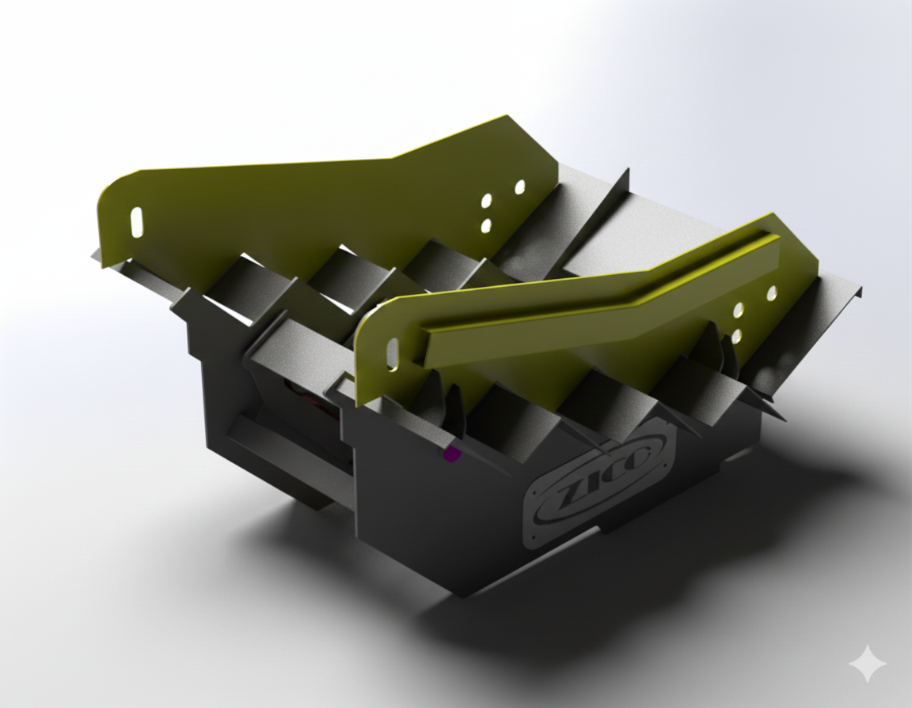
Após a tora ser dividida pela Log Split Saw, a meia-tora cai neste equipamento. Sua função é receber peças cortadas (irregulares ou pequenos lotes) e unitizá-las em uma fila única e espaçada de forma controlada.
Função Essencial: Fluxo Contínuo
- Separação: Garante espaçamento mínimo entre toras muito próximas para leitura de sensores.
- Unitização: Assegura que apenas uma tora por vez seja apresentada ao próximo estágio.
- Próxima Etapa: Alimenta o Arredondador de Toras, equipamento que fará o desbastamento final para a laminação.
6.1 Guias Laterais Ajustáveis
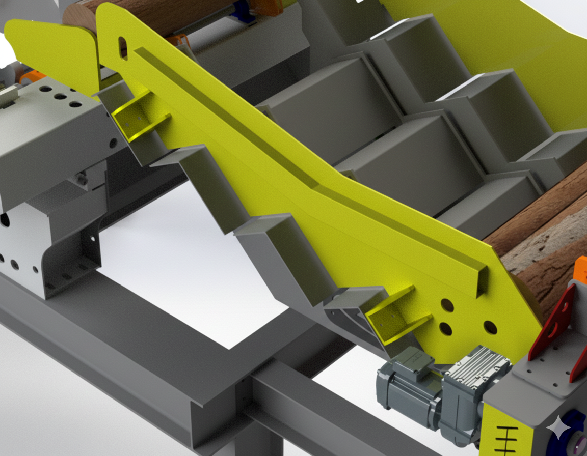
O Stepfeeder 1.4 possui um sistema de chapas amarelas ajustáveis que permitem adaptar o canal de transporte ao diâmetro específico das meias-toras. O ajuste fino é essencial para garantir o avanço sem folgas excessivas e sem travamentos.
PROCEDIMENTO DE REGULAGEM (COM LOTO)
- LOTO: Desligar e bloquear todas as fontes de energia.
- Soltar: Afrouxar os parafusos de fixação da chapa amarela.
- Mover: Deslizar a chapa lateralmente (aumentando ou diminuindo a largura).
- Medir: Usar gabarito para garantir a largura correta conforme o diâmetro da tora.
- Apertar: Reapertar firmemente. A chapa não pode se mover sob carga.
6.2 Controle e Especificações Técnicas
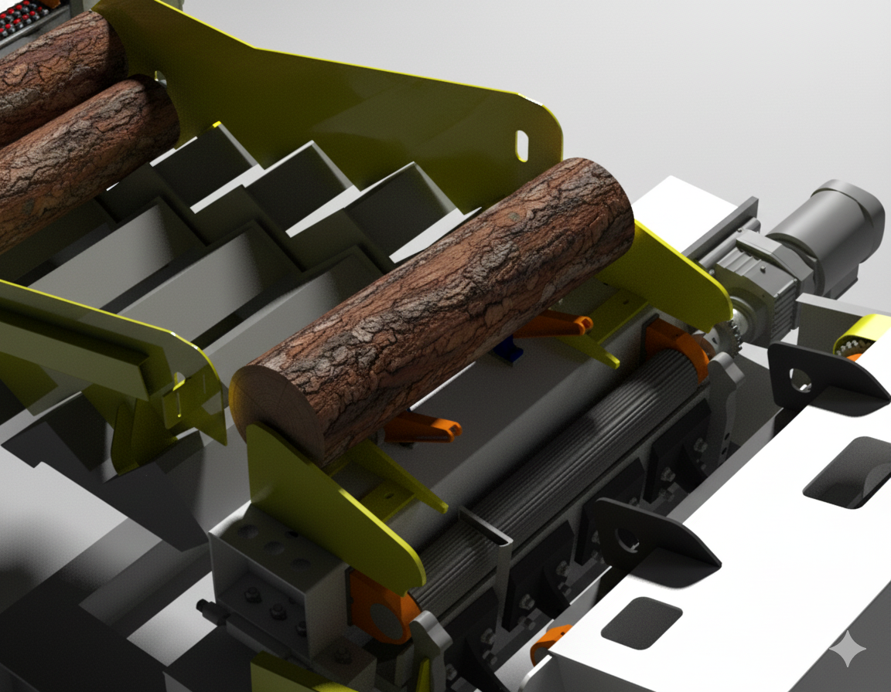
Ponto de Espera e Intertravamento
A tora permanece parada no topo até que o sinal "Vaga Livre" venha do Arredondador. Isso previne congestionamentos.
Lista de Componentes
| Componente | Especificação | Qtd | Ação | |
|---|---|---|---|---|
| Cilindro Hidráulico | 50 x 36 x 450mm | 1 | shopping_cart Cotar | |
| Ponteira rotular de articulação | M27 x RTH05027 | 1 | Componente utilizado para fixação de cilindro hidráulico. | shopping_cart Cotar |
| Rolamento de Guia | 6210 RS C3 | 4 | shopping_cart Cotar | |
| Roldana de Guia | Peça Usinada (Cód. 12375) | 4 | shopping_cart Cotar | |
| Unidade Hidráulica | Unidade 100L (EH 32690/25) | 1 | shopping_cart Cotar |
Plano de Lubrificação (Stepfeeder 1.4)
| Ponto | Lubrificante | Frequência | Procedimento |
|---|---|---|---|
| Fluido Hidráulico | ISO VG 46 | 2.000h | Troca completa e limpeza do reservatório. |
| Filtro de Retorno | 10-25 microns | 500h | Substituir elemento filtrante. |
| Nível de Óleo | - | Diário | Verificar no visor antes do turno. |
| Temperatura | - | 4h | Máx 60°C. Monitorar superaquecimento. |
| Rolamentos Guia | Graxa Lítio | 50h | Inspecionar visualmente (são blindados). |
| Haste Cilindro | Óleo Mineral | Semanal | Limpar e aplicar camada fina protetora. |
| Limpeza Geral | - | Diário | Remover cascas e detritos das roldanas. |
Diagnóstico de Falhas (Stepfeeder 1.4)
Causa: 1. Falha Elétrica; 2. Nível de óleo crítico; 3. Válvula travada.
Ação: Verificar disjuntor e relé térmico. Completar nível do reservatório (100L). Inspecionar solenoide da válvula direcional.
Causa: 1. Pressão baixa; 2. Filtro entupido.
Ação: Verificar manômetro e ajustar Válvula de Alívio. Substituir filtros de sucção/retorno.
Causa: 1. Viscosidade errada; 2. Válvula de alívio circulando direto.
Ação: Verificar se o óleo é ISO VG 46/68. Reduzir pressão de trabalho se possível.
Causa: 1. Rolamentos de Guia (6210) danificados; 2. Cilindro desalinhado.
Ação: Substituir rolamentos das roldanas. Verificar alinhamento das fixações dos 2 cilindros e das 4 roldanas.
Causa: Vedações (Gaskets/Retentores) desgastadas.
Ação: Instalar kit de reparo do cilindro 50x36x450.
6.4 Unidade Hidráulica Dedicada (100L)
O Stepfeeder 1.4 possui uma unidade de força independente, menor que a principal, para garantir agilidade no ciclo de unitização das meias-toras.
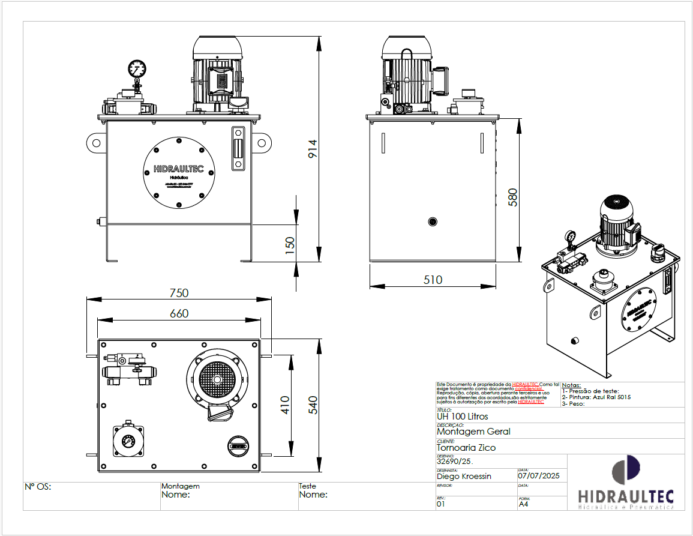
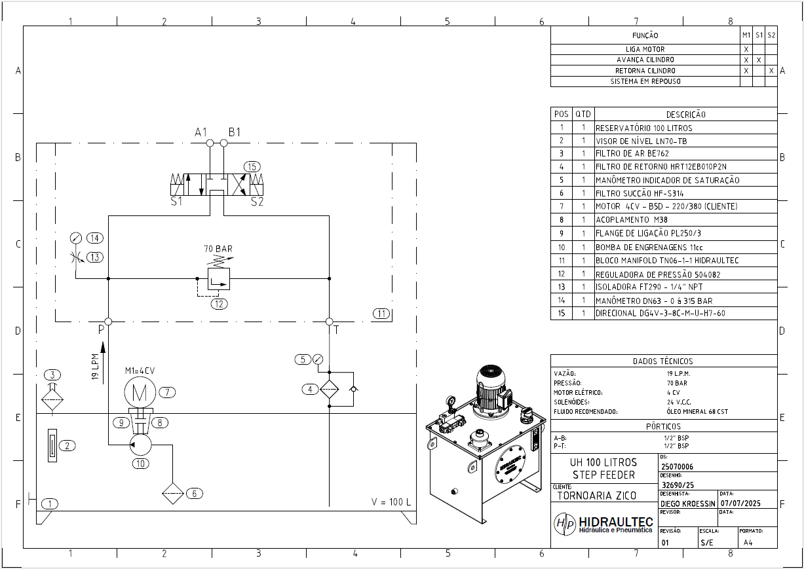
compare_arrows 7. Esteira Pulmão (Alinhamento)

Função: Pulmão e Alinhamento Ativo
Esta esteira realiza a interface final entre a linha de preparação e o Carregador do Torno (Centrador Tornado). Ela possui uma característica vital: Tração Dupla Independente.
Sistema de Alinhamento Independente
- Funcionamento: A esteira é dividida em lado esquerdo e direito, cada um com seu próprio conjunto de acionamento (motor e corrente).
- Correção de Ângulo: Se a tora chegar torta (enviesada), o operador ou o sistema automático pode acionar apenas um dos lados momentaneamente. Isso faz com que uma ponta da tora avance enquanto a outra fica parada, corrigindo o alinhamento para 90° em relação ao torno.
7.1 Ajustes Mecânicos e Manutenção
Guias Laterais Ajustáveis
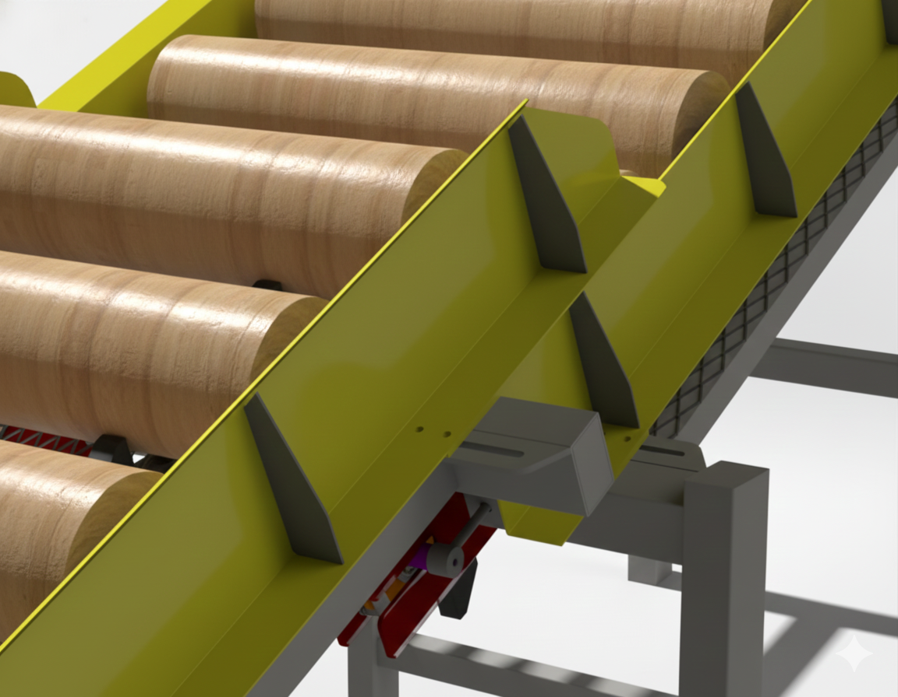
Assim como no Stepfeeder, as guias laterais da Esteira Pulmão permitem a adaptação do canal de transporte ao diâmetro exato das toras cilíndricas já destopadas.
- Finalidade: Manter a tora centrada e estabilizada enquanto está acumulada no "pulmão". A estabilidade é crucial para que, ao ser liberada, a tora entre no Torno Laminador de forma precisa.
- Regulagem: Soltar os parafusos das guias oblongas e mover a chapa lateralmente.
PROCEDIMENTO DE REGULAGEM RÁPIDA
- LOTO Obrigatório: Desligue e bloqueie as fontes de energia (Elétrica).
- Ajustar: Mova as guias para que o canal seja ligeiramente maior que o diâmetro da tora.
- Reapertar: Reapertar todos os parafusos firmemente para evitar o movimento da guia durante a operação.
Tensionamento de Corrente
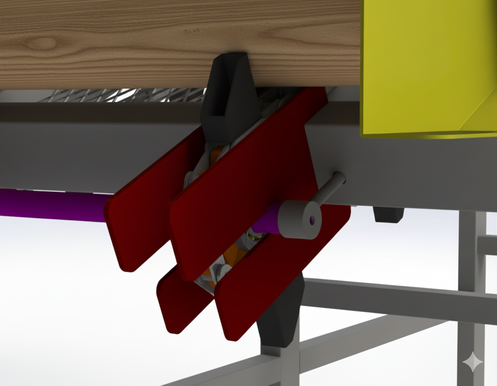
O sistema de arraste utiliza um mecanismo de tensionamento baseado em eixos guiados e hastes roscadas independentes em cada lateral.
Importância e Precauções:
- Paralelismo: A não observância do ajuste sincronizado pode resultar em desalinhamento do eixo, tensão desigual nas correntes e falhas prematuras de rolamentos e engrenagens.
- Objetivo: Puxar o eixo igualmente (deixando-o perfeitamente paralelo ao eixo de tração), garantindo que a tensão aplicada à corrente da direita seja a mesma da esquerda.
7.2 Tabelas Técnicas e Diagnóstico
Lista de Componentes: Esteira de Alimentação
| Componente | Especificação | Qtd. | Função Técnica | Ação |
|---|---|---|---|---|
| Motoredutor | FA67/G DRN80MP4/RS 1,5 cv Na12 i142,40 | 2 | Fornece a tração para os eixos da esteira. O 67/G indica um redutor robusto. | shopping_cart Cotar |
| Engrenagem Motriz | ASA 2120 (Cód. 90.25525.006) | 4 | Engrenagens (pinhões) para transmissão de força por correntes de passo duplo. | shopping_cart Cotar |
| Engrenagem Complementar | ASA 2120 (Cód. 90.25525.008) | 4 | Engrenagens complementares no sistema de transmissão. | shopping_cart Cotar |
| Rolamento | 6210 DDU | 8 | Rolamentos rígidos de esferas, utilizados nos eixos de tração ou guia. | shopping_cart Cotar |
| Elemento de Fixação | SIT-LOCK 80x50 | 4 | Dispositivo de aperto (anel de travamento) para fixar as engrenagens ASA 2120 nos eixos. | shopping_cart Cotar |
| Mancal | FC 210 | 4 | Mancal tipo flange redondo para suporte e alinhamento do rolamento na estrutura. | shopping_cart Cotar |
| Rolamento | EX 210 | 4 | Rolamento de inserção com anel de fixação excêntrico, utilizado em conjunto com o mancal. | shopping_cart Cotar |
| Corrente | ASA 2120 | Aprox. 24400mm | Corrente de rolos de passo duplo utilizada para a movimentação principal da esteira. | shopping_cart Cotar |
Plano de Lubrificação
| Componente | Lubrificante | Frequência | Aplicação |
|---|---|---|---|
| Motoredutores (2x 67/G) | Óleo Sintético ISO VG 220 | Anual (4.000h) | Verificar nível pelo visor. |
| Rolamentos (8x 6210) | Graxa Lítio Complexo NLGI 2 EP | Mensal | Aplicar via pinos graxeiros. |
| Correntes (ASA 2120) | Óleo Adesivo ISO VG 150/220 | Semanal | Aplicar nos pinos e buchas (lado interno). |
| Sit-Lock 80x50 | Não se aplica | Anual | Inspecionar torque de aperto. |
Diagnóstico de Falhas (Esteira de Alimentação)
Causa: 1. Falha Elétrica/Motoredutor; 2. Sobrecarga.
Ação: Verificar disjuntor. Testar se os Motoredutores 67/G (2 pçs) estão recebendo energia. Remover excesso de toras travando os rolos.
Causa: 1. Tensionamento Insuficiente; 2. Engrenagem Desgastada.
Ação: Ajustar sistema de tensionamento nas cabeceiras. Inspecionar dentes das Engrenagens ASA 2120 e medir o passo da corrente.
Causa: 1. Falha de Rolamento; 2. Sit-Lock Solto.
Ação: Injetar lubrificante. Se persistir, substituir Rolamento 6210. Reapertar Sit-Lock 80x50 se a engrenagem estiver solta.
Causa: Alinhamento Incorreto.
Ação: O eixo motriz e o eixo movido não estão paralelos. Usar ferramentas de alinhamento para corrigir o posicionamento dos mancais.
center_focus_strong 8. Centrador de Toras Tornado 1.4
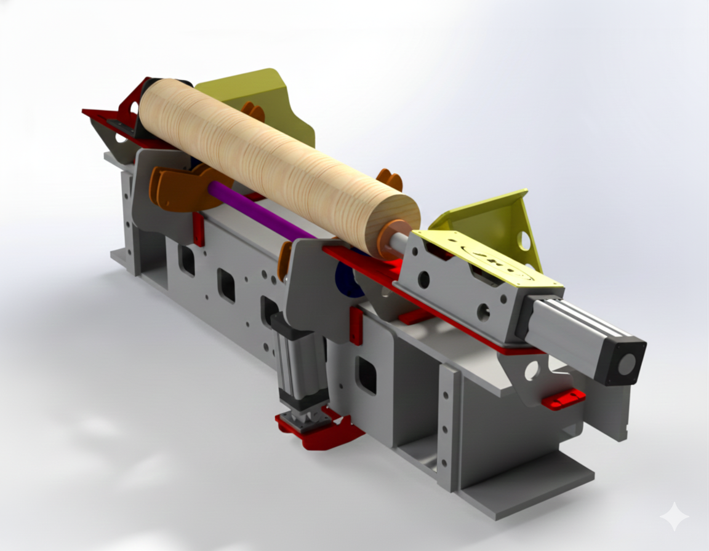
Localizado no topo da Esteira de Alimentação/Pulmão, adjacente à entrada do Torno Laminador, o Centrador de Toras garante o posicionamento lateral exato da tora antes de ela ser introduzida no equipamento de laminação.
6.1 Componentes e Propósito
- Função: Garantir que o eixo de laminação da tora esteja perfeitamente alinhado com o centro geométrico do Torno Laminador.
- Mecanismo de Centramento Ativo:
- Cilindro Pneumático: Fornece a força de empurre para mover a tora lateralmente.
- Batente de Referência Regulável: Ponto de encosto fixo que define a linha de centro da laminação.
6.2 Ciclo de Funcionamento
- Avanço da Tora: A Esteira Pulmão avança a tora destopada e cilíndrica até a posição de centramento.
- Atuação: Um sensor detecta a presença da tora e o CLP aciona o Cilindro Pneumático.
- Centragem: O cilindro estende-se, empurrando a tora com força controlada até que sua lateral faça contato firme e total com o Batente de Referência.
- Travamento e Liberação: A tora é mantida firmemente encostada no batente até que o Torno Laminador esteja pronto.
6.3 Ajuste Fino de Precisão
O Batente de Referência é regulável. Esta regulagem é essencial para:
- Compensação de Diâmetro: Ajustar o ponto zero caso haja pequenas variações.
- Otimização do Corte: Definir o alinhamento para máxima recuperação de lâminas.
- Procedimento: O ajuste é realizado pela equipe de manutenção, geralmente através de um sistema de rosca de fuso, seguindo procedimento LOTO.
8.1 Lista de Componentes e Diagnóstico (Centrador)
Lista de Componentes: Centrador de Toras
| Componente | Especificação | Qtd. | Função Técnica | Ação |
|---|---|---|---|---|
| Cilindro Pneumático (Centrador) | Ø100 x 200 | 1 | Responsável por empurrar a tora lateralmente contra o batente. | shopping_cart Cotar |
| Cilindro Pneumático (Tombador) | Ø100 x 150 | 1 | Provavelmente relacionado a um movimento auxiliar para posicionar a tora. | shopping_cart Cotar |
| Ponteira Rotular | M20 | 1 | Junta esférica para fixar a haste do cilindro, compensando desalinhamentos. | shopping_cart Cotar |
| Articulação Traseira macho | Ø100 | 1 | Fixação da base dos cilindros à estrutura. | shopping_cart Cotar |
| Articulação Traseira Fêmea | Ø100 | 1 | Fixação da base dos cilindros à estrutura. | shopping_cart Cotar |
| Mancal de Fixação | FC 210 | 2 | Suporte de rolamento tipo Flange Circular (FC). | shopping_cart Cotar |
| Rolamento | EX 210 | 2 | Rolamento interno ao mancal FC 210. | shopping_cart Cotar |
| Raspador Hidráulico | 63 x 50 x 6,35 | 2 | Elemento de vedação usado para raspar sujeira das hastes. | shopping_cart Cotar |
Diagnóstico de Falhas (Centrador)
Causa: 1. Baixa Pressão de Ar; 2. Cilindro Travado/Vazando.
Ação: Verificar pressão da linha principal e regulador. Inspecionar haste, vedadores e Raspador Hidráulico por danos.
Causa: 1. Desgaste Mecânico (Folgas); 2. Batente Desregulado.
Ação: Verificar folga na Ponteira Rotular (M20) e Mancais. Recalibrar a posição do batente e travar firmemente.
Causa: 1. Restrição no Escape; 2. Haste Suja.
Ação: Limpar ou substituir o silenciador da válvula. Limpar a haste e inspecionar o Raspador Hidráulico 63x50.
Causa: Acionamento Não Sincronizado.
Ação: O Cilindro recua antes da hora. Ajustar o timing de acionamento do CLP.
speed 9. Pista de Lâminas (2 Decks)
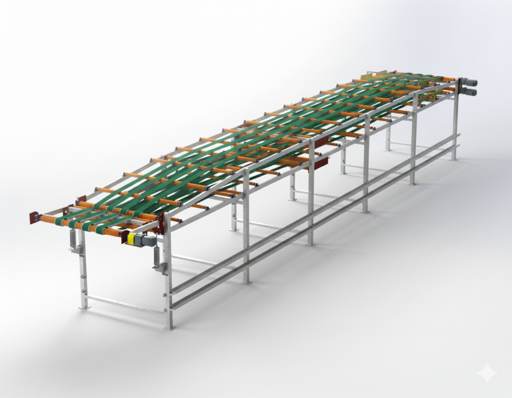
Conceito: Zero Gap (Fluxo Contínuo)
A Pista de Lâminas de Duplo Nível atua como um buffer dinâmico de alta velocidade entre o Torno e a Guilhotina. Sua função primária é eliminar o "tempo morto" (dead time) durante a troca de toras.
Lógica de Controle de Fluxo
- Tora N (Deck A): Enquanto uma tora está terminando de ser laminada, sua folha segue pelo Deck Superior (exemplo).
- Tora N+1 (Deck B): Assim que a nova tora entra no torno, o sistema direciona a nova folha para o Deck Inferior.
- Resultado: A guilhotina recebe um fluxo contínuo. Assim que a cauda da lâmina do Deck A passa, a ponta da lâmina do Deck B já entra, reduzindo o intervalo entre folhas para quase zero.
9.1 Deck de Deflexão Móvel (Tipple)
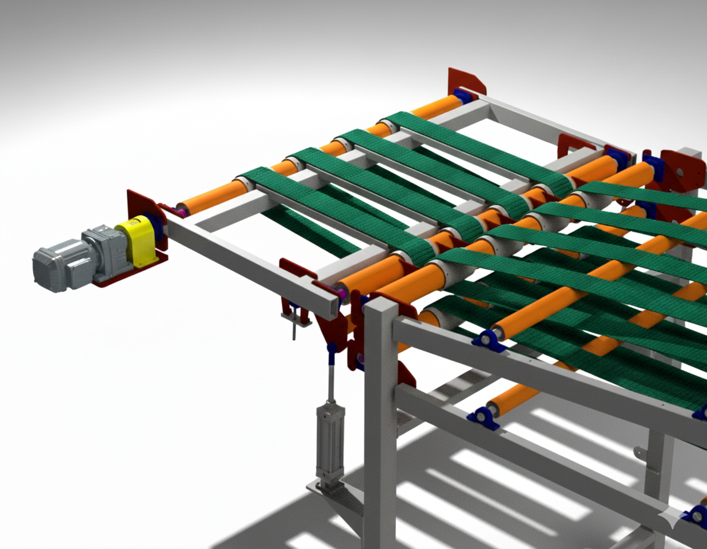
Localizado imediatamente na saída do Torno, este mecanismo é o "interruptor" que direciona o fluxo da lâmina para cima ou para baixo.
Funcionamento e Acionamento
- Pivoteamento Pneumático: O movimento de inclinação é realizado por 2 Cilindros Pneumáticos (Ø80 x 200). O ar comprimido garante a velocidade necessária para "chicotear" a ponta da lâmina para o deck correto sem rasgá-la.
- Tração Própria: Possui um motoredutor (R47) independente. Isso garante que a lâmina seja acelerada na saída do torno, evitando que ela enrugue ou pare na zona de transição.
9.2 Cabeceira de Tração e Tensionamento
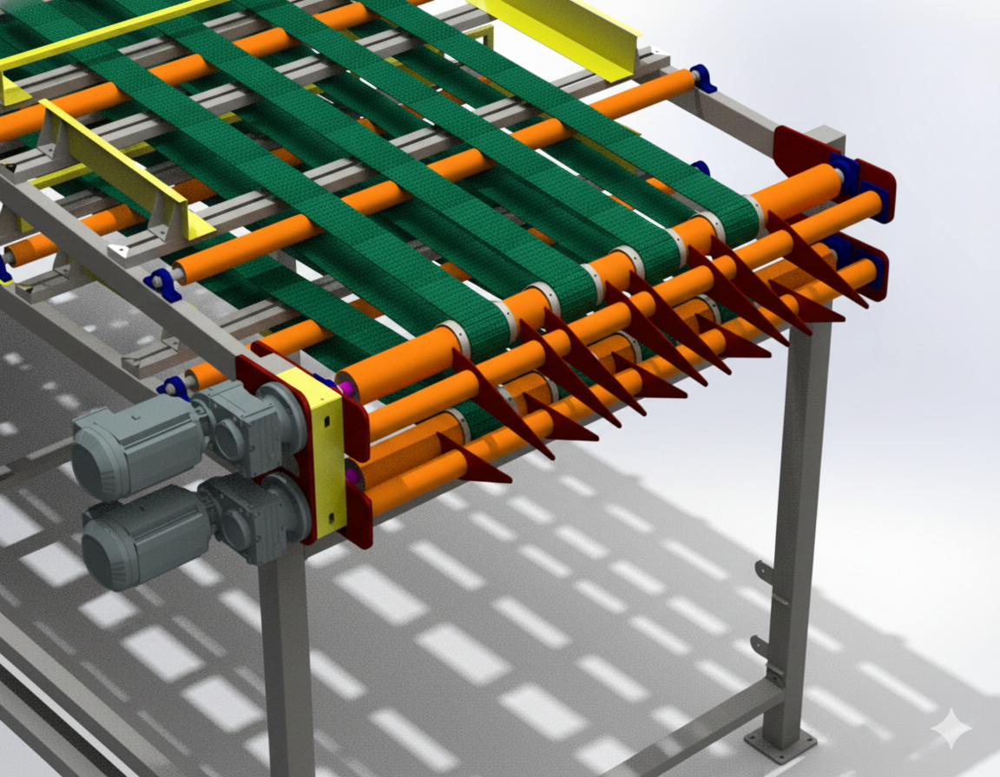
A tração é o coração do transporte. Cada deck (Superior e Inferior) possui seu próprio conjunto motriz independente.
Tensionamento das Correias
O sistema utiliza Mancais T207 guiados. Para esticar a correia transportadora, ajustam-se os parafusos laterais que empurram o mancal T, movendo o rolo e tencionando a lona. Atenção: Ajustar os dois lados igualmente para não desalinhar a correia.
9.3 Lista de Componentes e Manutenção
1. Componentes da Pista (Corpo Principal e Tração)
| Componente | Especificação | Qtd. | Detalhes Técnicos | Ação |
|---|---|---|---|---|
| Motoredutor Tração | FF47 DRN100L4 i5,675 Na305 | 2 | Um para cada deck. Fixação por flange. | shopping_cart Cotar |
| Mancal de Tração | F207 (Flangeado) | 4 | Suporte do eixo principal. | shopping_cart Cotar |
| Rolamento Tração | EX 207 | 4 | Com colar excêntrico. | shopping_cart Cotar |
| Acoplamento | MSN 70 | 2 | Verificar elemento elástico (borracha) anualmente. | shopping_cart Cotar |
| Mancal Tensor | T207 (Pedestal Guiado) | 4 | Mancal deslizante para esticamento. | shopping_cart Cotar |
| Rolamento Tensor | EX 207 | 8 | Rolamentos para mancal F207 e T207. | shopping_cart Cotar |
| Mancais Intermediários | P205 (Pedestal) | 60 | Rolinhos de esteira. | shopping_cart Cotar |
| Rolamento rolinhos | EX 205 | 60 | Com colar excêntrico. | shopping_cart Cotar |
| Correia de Pista | CT V227B 08GF00 AS-32200mm-140mm AFZ | 8 | Correia transportadora de lâminas. | shopping_cart Cotar |
ATENÇÃO: LUBRIFICAÇÃO INTENSIVA
A pista possui cerca de 60 mancais P205 (rolos de apoio da correia). Devido à alta velocidade e poeira, estes pontos devem ser lubrificados quinzenalmente para evitar travamento dos roletes, o que causaria desgaste prematuro da correia transportadora.
2. Componentes do Deck de Deflexão (Móvel)
| Componente | Especificação | Qtd. | Função | Ação |
|---|---|---|---|---|
| Motoredutor | R47 DRN90SP4 i5,64 Na312 M1 | 1 | Tração independente do deck móvel. | shopping_cart Cotar |
| Cilindro Pneumático | Ø80 x 200 | 2 | Responsável pelo movimento rápido de sobe/desce (pivô). | shopping_cart Cotar |
| Ponteira Rotular | M20 | 2 | Articulação da haste do cilindro. | shopping_cart Cotar |
| Articulação Traseira macho | Ø80 | 2 | Fixação da base dos cilindros à estrutura. | shopping_cart Cotar |
| Articulação Traseira Fêmea | Ø80 | 2 | Fixação da base dos cilindros à estrutura. | shopping_cart Cotar |
| Mancal de eixos | F207 (Flangeado) | 6 | Suporte do eixo principal. | shopping_cart Cotar |
| Rolamentos Eixo | EX 207 | 6 | Eixo de tração do deck móvel. | shopping_cart Cotar |
| Articulação Traseira | Macho Ø80 | 2 | Pivô traseiro do cilindro. | shopping_cart Cotar |
| Mancal Tensor | T205 (Pedestal Guiado) | 2 | Mancal deslizante para esticamento. | shopping_cart Cotar |
| Rolamento Tensor | EX 205 | 2 | Rolamentos para mancal F207 e T207. | shopping_cart Cotar |
| Correia de Pista | CT V227B 08GF00 AS-2480mm-140mm AFZ | 8 | Correia transportadora de lâminas. | shopping_cart Cotar |
9.4 Plano de Lubrificação e Diagnóstico
Plano de Lubrificação (Pista de Lâminas)
| Componente | Lubrificante | Frequência | Notas de Manutenção |
|---|---|---|---|
| Redutores (FF47 / R47) | Óleo ISO VG 220 | Anual | Verificar nível. Troca a cada 4.000h. |
| Rolamentos Eixos (F207/T207) | Graxa EP NLGI 2 | Mensal | Ambiente severo. |
| Rolamentos Corpo (P205) | Graxa EP NLGI 2 | Quinzenal | Risco alto de contaminação por pó. |
Diagnóstico de Falhas (Pista)
Causa: 1. Falha Elétrica; 2. Acúmulo de Lâmina.
Ação: Checar disjuntor. Verificar se há cheiro de queimado no FF47. Remover manualmente lâminas presas nos rolos.
Causa: 1. Falha de Rolamento; 2. Correia Desalinhada.
Ação: Identificar mancal (F207/P205) ruidoso ou quente. Ajustar fusos do tensionador T207 para centralizar a correia.
Causa: 1. Velocidade Não Sincronizada; 2. Falha Pneumática no Desvio.
Ação: Verificar sincronismo entre Torno e Pista no CLP. Checar pressão de ar e articulação dos cilindros do Deck Móvel.
Causa: Tensionamento Insuficiente.
Ação: Apertar sistema de esticamento nos mancais T207. Limpar polias se houver resina.
delete_outline 10. Sistema de Esteiras de Resíduos
10.1 Esteira Transportadora de Lixo ("Tapetão")
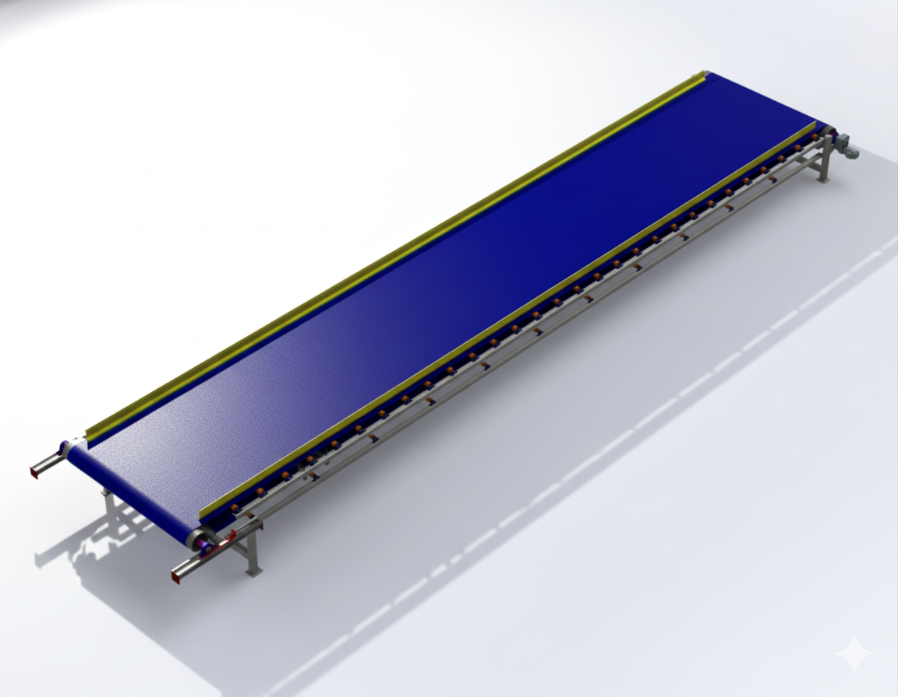
A Esteira de Lixo é posicionada diretamente sob a Esteira de Entrada de Toras (ou sob o Stepfeeder) e é responsável pela coleta e transporte dos resíduos soltos que se desprendem das toras durante o manuseio e o transporte inicial.
Função Primária e Logística
- Coleta e Limpeza: Coleta detritos como cascas soltas, galhos finos e terra. Previne o acúmulo de material combustível na base da máquina.
- Destinação: O material é descarregado diretamente na Calha do Picador da fábrica.
- Proteção: Protege componentes inferiores (motoredutores e sensores) contra contaminação.
10.2 Sistema de Tensionamento de Correia
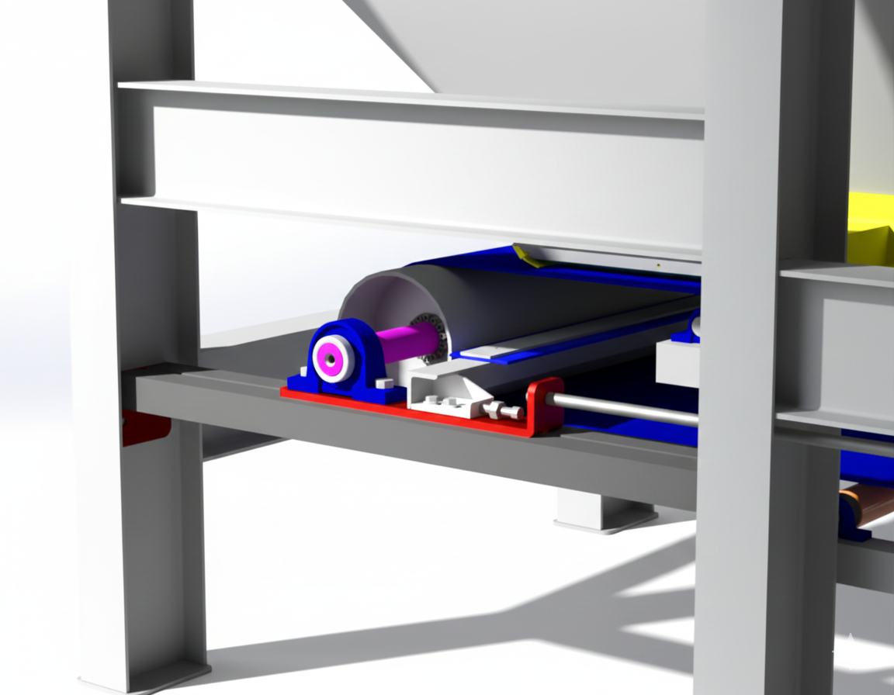
O tensionamento adequado é essencial para garantir que o rolo de tração transmita o torque sem deslize (slip) e para assegurar o rastreamento linear.
Procedimento e Precisão
- Mecanismo: O eixo é suportado por Mancais P212 (ou tipo T/FL) montados em uma base móvel.
- Ação: Ao apertar a porca da barra roscada (fuso), a base é empurrada, esticando a correia.
- Alinhamento (Crítico): O ajuste deve ser realizado simultaneamente em ambos os lados. O tensionamento desigual causa desalinhamento e danos às bordas da correia.
- Monitoramento: Verificar periodicamente se há "barriga" na parte inferior ou deslizamento na tração.
10.4 Tabelas Técnicas e Lubrificação
Lista de Componentes (Esteira de Lixo)
| Função | Componente | Especificação | Qtd. | Ação |
|---|---|---|---|---|
| Tração Principal | Motoredutor | FA67/G DRN80MP4 Na18 i95,94 | 1 | shopping_cart Cotar |
| Eixos Principais | Mancal de Pedestal | P214 | 4 | shopping_cart Cotar |
| Rolamento | EX 214 | 4 | shopping_cart Cotar | |
| Fixação | Elemento de Fixação | SIT-LOCK 110x70 | 4 | shopping_cart Cotar |
| Suporte Intermediário | Mancal de Pedestal | P205 | 80 | shopping_cart Cotar |
| Rolamento | EX 205 | 80 | shopping_cart Cotar | |
| Correia | Correia Transportadora | CT V340D 10M00 AS F-31100mm-2700mm AFZ | - | shopping_cart Cotar |
Plano de Lubrificação Detalhado
| Componente | Lubrificante | Método | Frequência (Serviço Severo) |
|---|---|---|---|
| Motoredutor (FA67) | Óleo Sintético (CLP HC) ISO VG 220 | Verificar nível / Trocar | Anual (ou a cada 4.000h) |
| Rolamentos Cabeceira (EX214) | Graxa Lítio Complexo NLGI 2 EP | Pino Graxeiro | Mensal (ou 500h) |
| Rolamentos Interm. (EX205) | Graxa Lítio Complexo NLGI 2 EP | Pino Graxeiro | Mensal ou Quinzenal (Devido ao alto número e ambiente) |
| Sit-Lock | Não requer | - | Inspecionar torque anualmente. |
NOTA DE MANUTENÇÃO CRÍTICA
Prioridade: Devido aos 80+ pontos de lubrificação (P205), a manutenção deve priorizar a organização e rastreamento para garantir que nenhum ponto seja esquecido. A graxa nova ajuda a "expulsar" a poeira dos rolamentos.
Diagnóstico de Falhas
Causa: 1. Falha Elétrica; 2. Sobrecarga ou Travamento (Lixo acumulado).
Ação: Verificar disjuntor. Desligar (LOTO) e remover manualmente material acumulado sob o rolo de tração.
Causa: 1. Tensionamento Insuficiente; 2. Contaminação da Polia.
Ação: Ajustar fusos esticadores (Mancais P212). Limpar resíduos úmidos ou lama da polia de tração.
Causa: Falha de Lubrificação em um dos Mancais P205/P214.
Ação: Localizar o mancal quente/ruidoso. Injetar graxa correta. Se persistir, substituir o rolamento EX205/EX214.
Causa: Carga Desigual ou Rolo Travado.
Ação: Ajustar calha de alimentação para centralizar a queda do lixo. Verificar se algum mancal P205 travou, criando resistência desigual.
Causa: Falha no Retentor do Motoredutor.
Ação: Verificar nível. Planejar troca das vedações.
10.3 Área de Aproveitamento (Pós-Guilhotina)
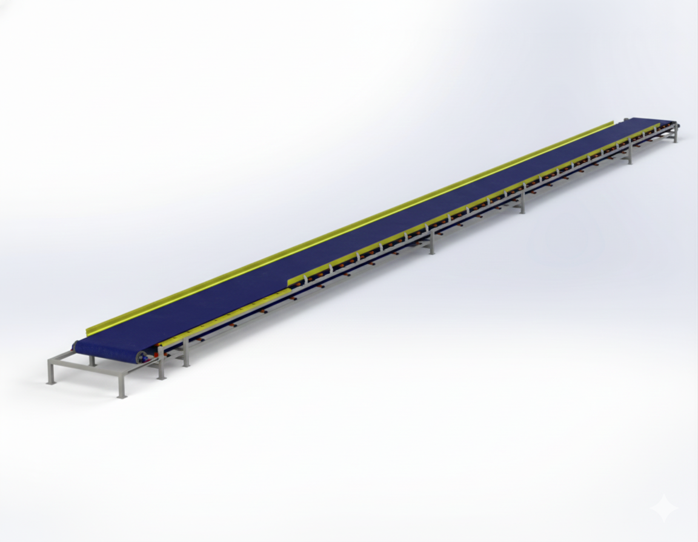
A Esteira de Retorno possui um trecho específico sem guias laterais. Isso permite acesso direto à correia para intervenção no fluxo de retalhos (clippings).
- Retirada de Miolo: Retalhos de qualidade são retirados manualmente para reuso como miolo de compensado.
- Descarte: O restante segue para a Calha do Picador (Biomassa).
10.4 Especificações: Esteira de Retorno e Aproveitamento
Lista de Componentes (Esteira de Retorno)
| Função / Localização | Componente | Especificação | Qtd. | Ação |
|---|---|---|---|---|
| Tração Principal | Motoredutor | FA67/G DRN80MP4 Na15 i120,79 | 1 | shopping_cart Cotar |
| Cabeceiras (Tensão/Tração) |
Mancal de Pedestal | P212 | 4 | shopping_cart Cotar |
| Rolamento | EX 212 | 4 | shopping_cart Cotar | |
| Elemento de Fixação | SIT-LOCK 60x90 | 4 | shopping_cart Cotar | |
| Corpo da Esteira (Suporte Intermediário) |
Mancal de Pedestal | P205 | 170 | shopping_cart Cotar |
| Rolamento | EX 205 | 170 | shopping_cart Cotar | |
| Correia | CT V340DM - 78.300 X 1.800 AFZ | 1 | shopping_cart Cotar |
Plano de Lubrificação (Esteira de Retorno)
| Componente | Tipo de Lubrificante | Especificação Sugerida | Frequência Inicial |
|---|---|---|---|
| Motoredutor (FA67) | Óleo para Engrenagens | Sintético (CLP HC) ISO VG 220 | Anual (ou a cada 4.000h) |
| Rolamentos Cabeceira (EX212) | Graxa Extrema Pressão | Lítio Complexo NLGI 2 EP | Mensal (ou 500h) |
| Rolamentos Interm. (EX205) | Graxa Extrema Pressão | Lítio Complexo NLGI 2 EP | Mensal ou Quinzenal (Alto número e ambiente sujo) |
| Sit-Lock (60x90) | Não Requer | Não se aplica | Inspecionar torque anualmente. |
NOTAS DE MANUTENÇÃO (LONGOS TRANSPORTADORES)
- Prioridade: Com 170 pontos de lubrificação, o uso de checklists é obrigatório.
- Proteção: A graxa nova ajuda a vedar os rolamentos contra a poeira de madeira.
- Vibração: Vibração excessiva no corpo da esteira geralmente indica um ou mais rolamentos EX205 travados.
Diagnóstico de Falhas (Esteira de Retorno)
Causa: 1. Falha Elétrica; 2. Sobrecarga ou Travamento.
Ação: Verificar disjuntor. Desligar (LOTO) e remover acúmulo de retalhos (clippings) presos nas cabeceiras.
Causa: 1. Falha de Rolamento Intermediário (um dos 170 EX205).
Ação: Localizar o mancal superaquecido pelo tato (cuidado!). Injetar graxa ou substituir o rolamento.
Causa: 1. Tensionamento Insuficiente; 2. Polia Contaminada.
Ação: Ajustar parafusos esticadores (Mancais P212) para aumentar a tensão. Limpar resíduos úmidos da polia.
Causa: Tensão desigual nos fusos.
Ação: Verificar paralelismo dos rolos. Ajustar um dos lados do tensor P212 para centralizar a lona.
Causa: Rolamento travado.
Ação: Um rolamento EX212 ou EX205 travou, forçando o sistema. Identificar e trocar o rolamento, não apenas apertar o Sit-Lock.
Plano de Lubrificação Integral
history Cronograma Técnico por Horas Trabalhadas
Este cronograma baseia-se no horímetro da linha Tornado 1.4. Em ambientes de alta poeira ou umidade, as horas de intervalo para graxa devem ser reduzidas em 25%.
GUIA DE REFERÊNCIA DE HORAS
10h: Diário (1 turno) | 50h: Semanal | 200h: Mensal | 1000h: Semestral | 2000h/4000h: Anual
| Máquina | Componente / Ponto | Tipo | Referência Visual | Lubrificante | Frequência (Horas) |
|---|---|---|---|---|---|
| 1. Esteira de Entrada de Toras | |||||
| Tração | Redutor R107 | Engrenagem |  | Óleo ISO VG 220 | Troca: 4000h |
| Eixos | Mancais EX 218 / 6212 | Rolamento |  | Graxa Lítio EP2 | A cada 200h |
| Carga | Corrente Falcão | Corrente |  | Óleo Adesivo | A cada 50h |
| 2. Stepfeeder (Escada Unitizadora) | |||||
| Potência | Unidade Hidráulica 250L | Unidade |  | Óleo AW 46/68 | Nível: 10h / Troca: 4000h |
| Atuadores | Cilindros 50x36x510 | Cilindro |  | Haste (Óleo Hid.) | A cada 10h (Insp.) |
| Guias | Roldanas (6210 RS) | Rondana |  | Graxa Lítio EP2 | A cada 200h |
| 3. Serra Log Split Saw | |||||
| Serras | Mancais SN 523 (22213) | Rolamento |  | Graxa Lítio EP2 | A cada 100h |
| Arraste | Redutor FA77 SEW | Engrenagem | 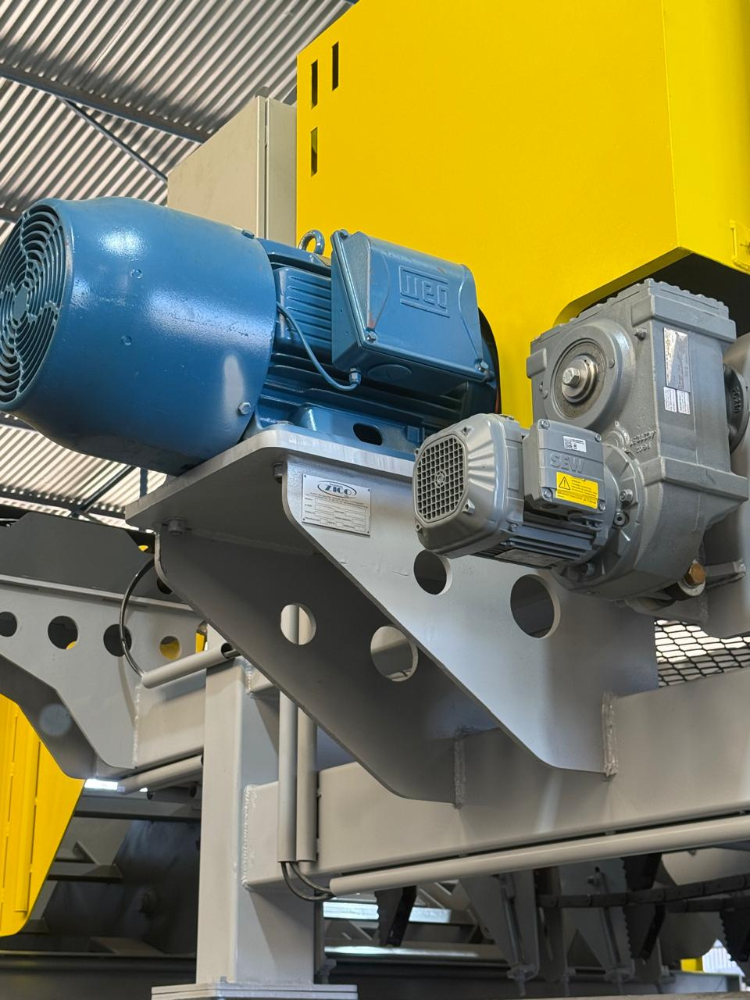 | Óleo ISO VG 220 | Troca: 4000h |
| Tração | Corrente ASA 2120 | Corrente | 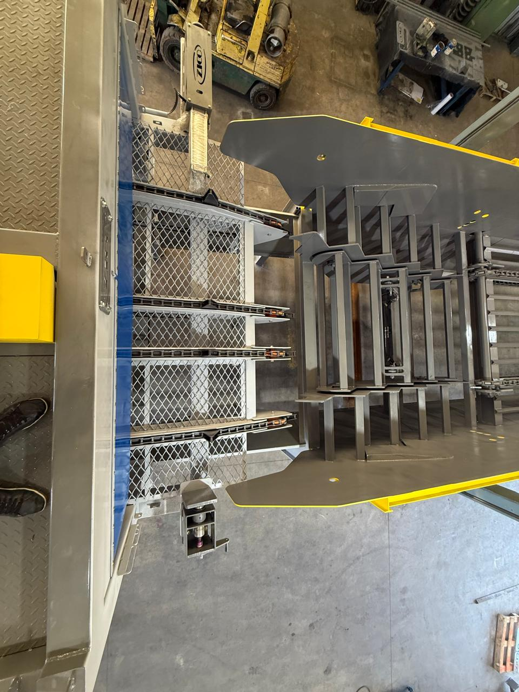 | Óleo Adesivo | A cada 10h |
| Pneumática | Cilindros Calçadores / Centragem | Cilindro | 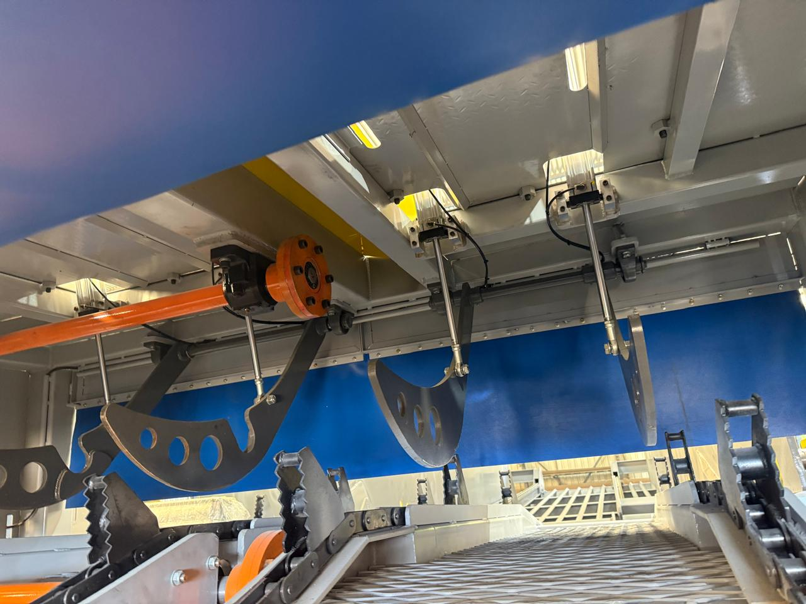 | Óleo SAE 10 | A cada 50h (Lubrefil) |
| 4. Transposição e Tombador | |||||
| Tração | Redutor FA67 | Engrenagem | 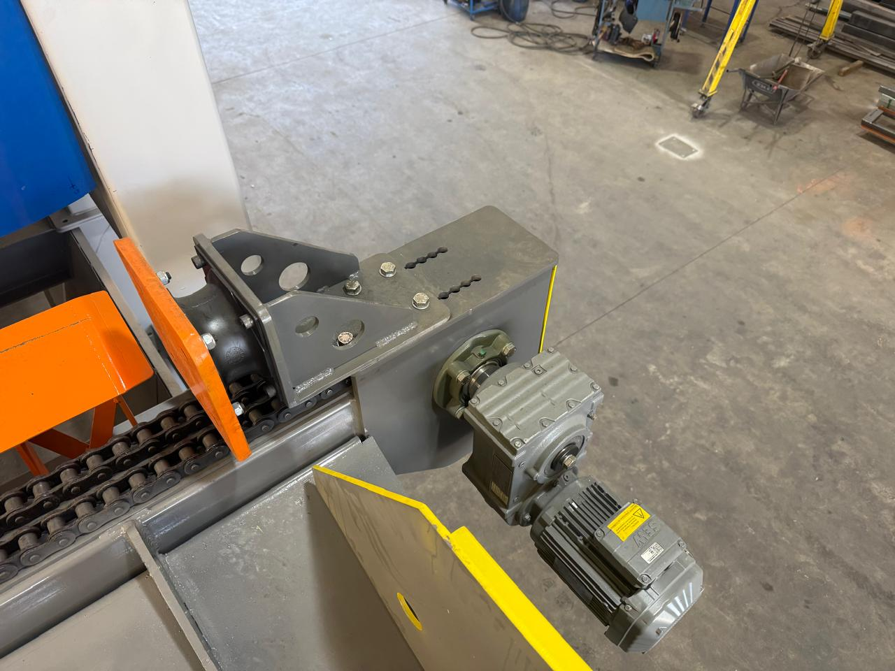 | Óleo ISO VG 220 | Troca: 4000h |
| Mancais | EX 212 / EX 210 | Rolamento | 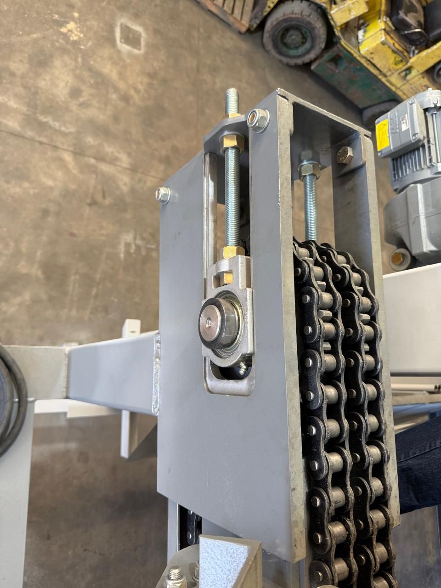 | Graxa Lítio EP2 | A cada 200h |
| Tombador | Cilindro Pneumático Ø100 | Cilindro | 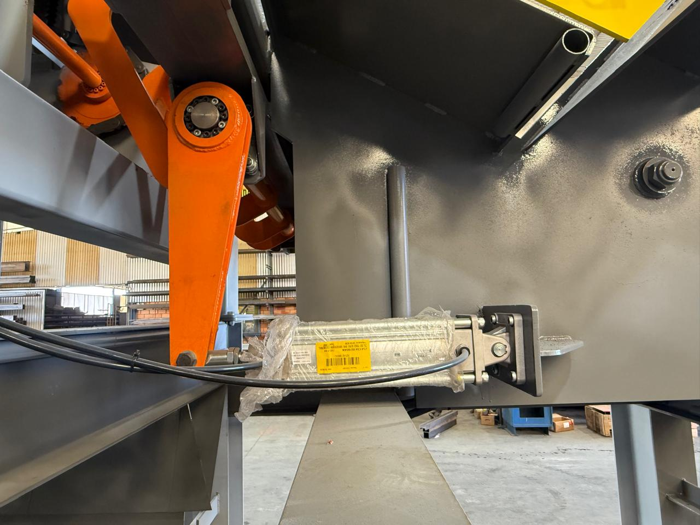 | Óleo SAE 10 | A cada 50h |
| 5. Stepfeeder 1.4 | |||||
| Potência | Unidade Hidráulica 100L | Unidade |  | Óleo AW 46 | Troca: 4000h |
| Step | Cilindro 50x36x450 | Cilindro | 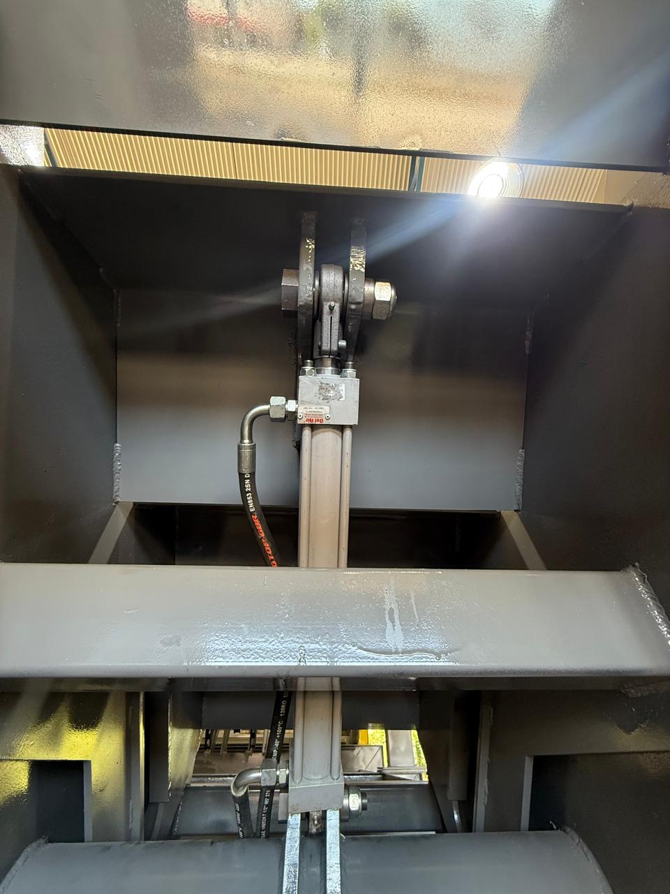 | Haste (Hidráulico) | A cada 10h |
| Guias | Roldanas (6210 RS) | Rondana | 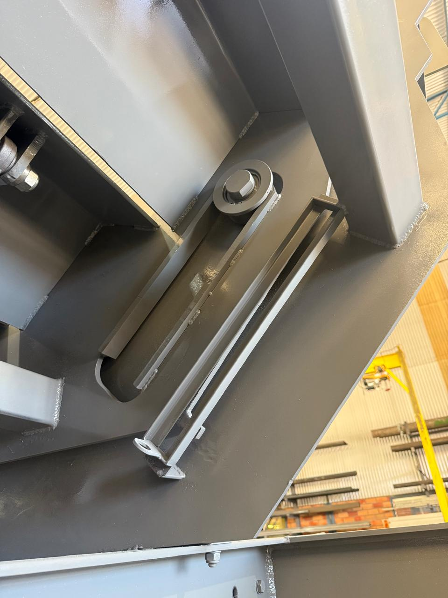 | Graxa Lítio EP2 | A cada 200h |
| 6. Esteira Pulmão (Dupla Tração) | |||||
| Acionamento | Redutores FA67 (2x) | Engrenagem |  | Óleo ISO VG 220 | Troca: 4000h |
| Mancais | EX 210 / 6210 | Rolamento |  | Graxa Lítio EP2 | A cada 200h |
| Corrente | ASA 2120 (Sincronismo) | Corrente |  | Óleo Adesivo | A cada 50h |
| 7. Centrador Tornado | |||||
| Empuxo | Cilindros Ø100 x 200 (Pneumático) | Cilindro | 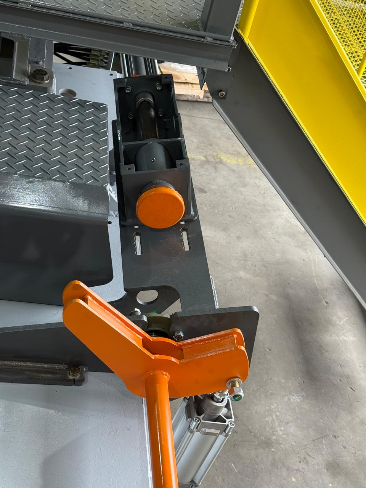 | Óleo SAE 10 | A cada 50h |
| Articulação | Ponteiras Rotulares M20 | Rolamento |  | Graxa Lítio EP2 | A cada 500h |
| Mancais | EX 210 / FC 210 | Rolamento |  | Graxa Lítio EP2 | A cada 200h |
| 8. Pista de Lâminas (2 Decks) | |||||
| Acionamento | Redutores FF47 / R47 | Engrenagem |  | Óleo ISO VG 220 | Troca: 4000h |
| Apoio (60x) | Rolete Intermediário (P205) | Rondana |  | Graxa Lítio EP2 | A cada 100h |
| Tensores | Rolamentos EX 207 / T 207 | Rolamento |  | Graxa Lítio EP2 | A cada 200h |
| Deflexão | Cilindros Ø80 (Pneumático) | Cilindro |  | Óleo SAE 10 | A cada 50h |
| 9. Esteiras de Lixo e Retorno | |||||
| Tração | Redutores FA67 | Engrenagem |  | Óleo ISO VG 220 | Troca: 4000h |
| Apoio (250x) | Rolinhos (P205 / EX 205) | Rondana |  | Graxa Lítio EP2 | A cada 200h |
| Cabeceiras | EX 214 / EX 212 | Rolamento |  | Graxa Lítio EP2 | A cada 200h |
verified_user 11. Segurança Geral e Compromisso de Qualidade
A Linha de Laminação Tornado 1.4 foi projetada seguindo rigorosos critérios de engenharia de segurança. No entanto, a segurança total depende da interação correta entre homem, máquina e ambiente.
11.1 Conformidade com a NR-12
A TORNOARIA ZICO declara que todos os equipamentos fornecidos neste projeto atendem integralmente aos requisitos da Norma Regulamentadora Nº 12 (Segurança no Trabalho em Máquinas e Equipamentos), incorporando:
11.2 Responsabilidade de Treinamento e Qualificação
RESPONSABILIDADE DO EMPREGADOR (CLIENTE)
Ressaltamos que, conforme a legislação vigente, é de inteira responsabilidade da empresa proprietária do equipamento:
- Garantir que apenas profissionais qualificados, capacitados e autorizados operem ou realizem manutenção nesta linha.
- Fornecer treinamento específico e recorrente sobre os riscos inerentes ao processo.
- Fiscalizar o uso obrigatório dos Equipamentos de Proteção Individual (EPIs) adequados (Óculos, Luvas de proteção mecânica, Protetor auricular, Calçado de segurança).
- Manter este Manual Técnico acessível a todos os operadores.
PROIBIÇÃO DE ACESSO
É estritamente proibida a presença de pessoas não autorizadas ou sem o devido treinamento na área de operação das máquinas. A ignorância dos procedimentos de segurança pode resultar em acidentes graves ou fatais.
11.3 O Padrão de Qualidade ZICO
Engenharia de Alta Performance
A TORNOARIA ZICO reafirma seu compromisso com a excelência industrial. Cada componente da Linha Tornado 1.4 — desde a robustez estrutural do aço carbono até a precisão dos sistemas de automação — foi selecionado para superar as expectativas de durabilidade.
Não entregamos apenas máquinas; entregamos uma solução integrada onde a segurança do operador e a eficiência produtiva caminham juntas. O desenvolvimento deste projeto reflete décadas de expertise, garantindo que o cliente tenha em mãos um ativo industrial confiável, seguro e de classe mundial.
"A segurança não é um dispositivo, é um estado de espírito e uma responsabilidade contínua."

Consulte o Manual sempre que houver dúvida.